Cityfab2.docs est un recueil des ateliers et projets proposés au fablab Cityfab2 à Bruxelles entre décembre 2019 et mai 2020.
La documentation de ces projets était mise à disposition des membres du fablab sur une plateforme web hébergée localement sur l'un des Raspberry Pi de l'atelier. Cette plateforme était web-to-print : elle permettait de générer des PDF des projets directement depuis leurs pages web, afin que les membres ou les participants ponctuels aux ateliers, s'ils le souhaitaient, puissent garder une documentation des projets qui les intéressaient. Dans un souci de cohérence avec cette première version de la documentation, ce recueil a également été mis en page en web-to-print avec l'outil Paged.js.
Les projets compilés dans ce livre utilisent résolument des outils libres et open source que toute personne peut installer et utiliser sur sa propre machine. Ces projets vont d'un niveau débutant à des concepts complexes, ils sont à considérer comme autant de points de départ servant à s'approprier les outils présentés en vue de s'en servir à nouveau dans de futurs projets.
Modélisation 3D
Modéliser un cube avec Freecad
Freecad est un logiciel de modélisation 3D paramétrique avec lequel on peut concevoir des modèles destinés à l'impression 3D ou à un usinage sur une machine CNC.
Marche à suivre
Pour modéliser un objet en 3D, il faut utiliser l'atelier Part design de Freecad. Les ateliers sont les différents espaces de travail de Freecad ; l'ensemble de ceux-ci se trouve dans un menu déroulant de la barre d'outils du haut de la fenêtre. Pour la modélisation 3D, Part design sera l'atelier auquel on fera le plus souvent appel.
Une fois dans l'atelier Part design, cliquez sur l'icône Sketcher pour démarrer une esquisse (en réalité ceci vous envoie dans l'atelier Sketcher , mais vous reviendrez automatiquement dans l'atelier Part design une fois l'esquisse terminée). Il vous sera alors demandé de choisir le plan sur lequel vous voulez placer votre esquisse.
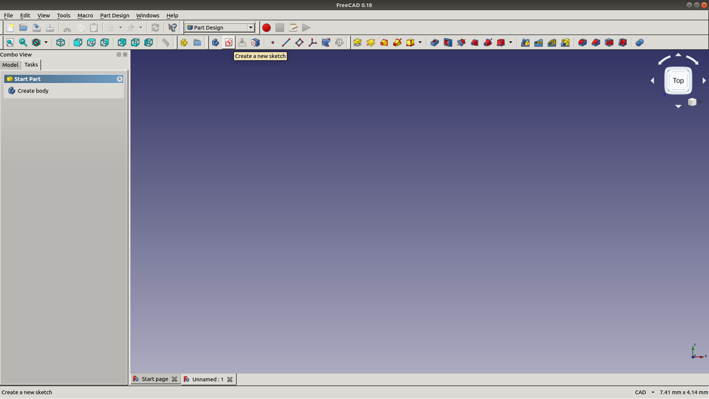
Créer un nouveau « Sketch » dans Freecad
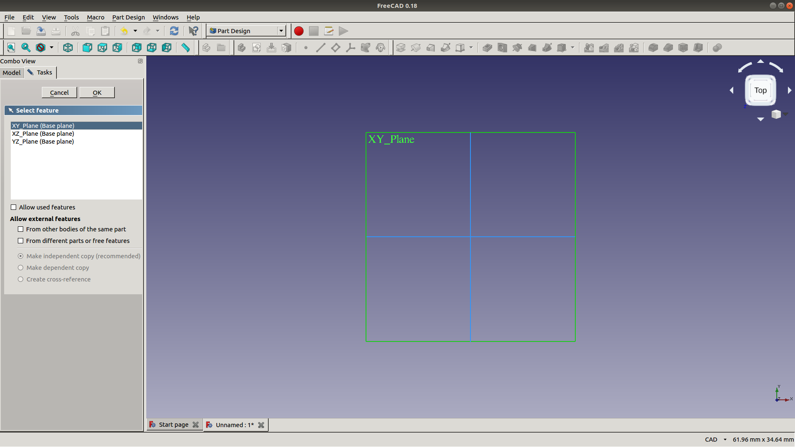
Choisir le plan dans lequel va se trouver l'esquisse
Pour dessiner un carré dans votre esquisse, sélectionnez l'outil Rectangle dans la barre supérieure des outils de dessin. Cliquez une première fois sur le plan et tirez les poignées pour obtenir une forme de carré. Si l'on voulait, à la place d'un cube, obtenir un pavé, il suffirait de dessiner un rectangle dont la longueur et la largeur ne se valent pas. Pour obtenir un cylindre il faudrait esquisser un cercle avec l'outil Circle .
Afin de s'assurer que le carré aura des proportions parfaites, on utilise les contraintes que propose Freecad. Avec les contraintes Set horizontal length et Set vertical length on peut définir précisément la longueur des côtés.
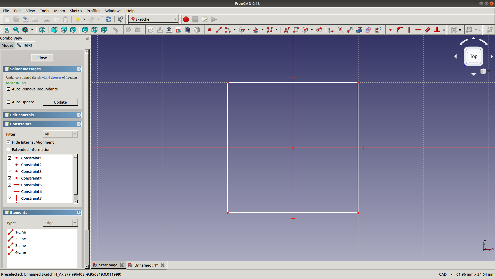
Dessiner un carré avec l'outil « Rectangle »
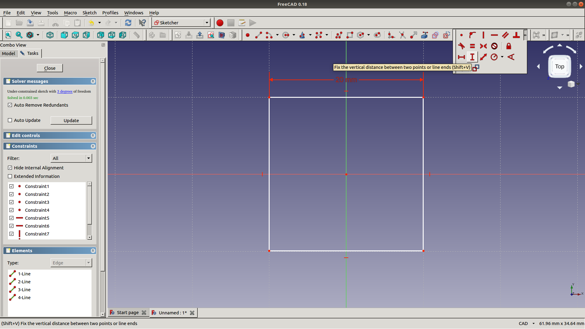
Contraintes de largeur horizontale et verticale
Une fois que le carré fait la bonne dimension, fermez l'esquisse en cliquant sur le bouton Close dans l'onglet Tasks de la barre d'outils latérale. Si vous revenez à l'onglet Model, vous pouvez voir dans l'arborescence de votre projet un objet de type Body qui contient l'esquisse que vous venez de créer.
Pour mettre en volume l'esquisse en 2D, cliquez sur l'outil Create Pad qui va procéder à l'extrusion de la forme. Vous pouvez y déterminer de combien de millimètres vous souhaitez que votre objet soit extrudé.
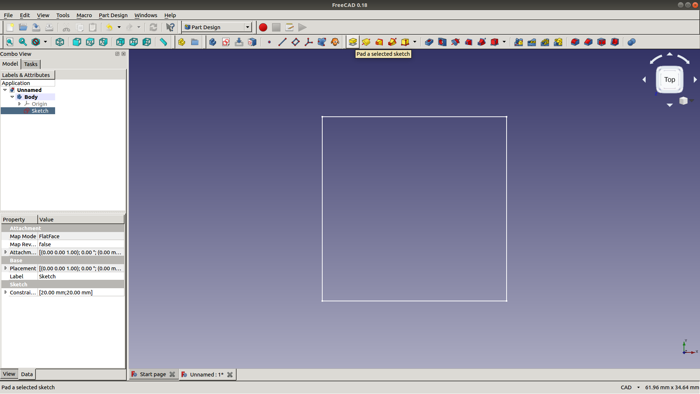
L'esquisse est devenue un « Body »
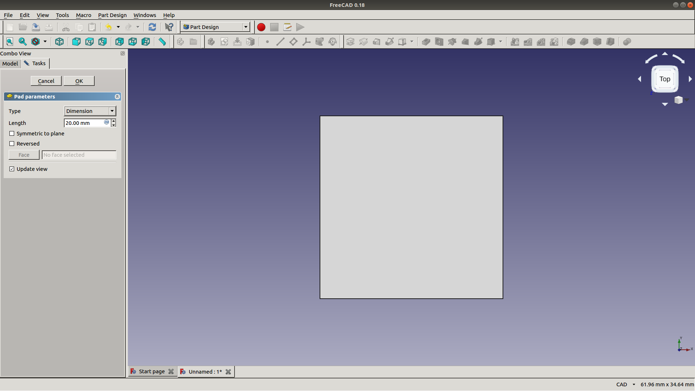
Outil « Create Pad » (extrusion)
Quand vous terminez l'extrusion, vous pouvez visualiser votre objet en 3D, et noter que l'esquisse est devenue un Pad dans l'arborescence du projet.
Pour exporter l'objet 3D, sélectionnez l'objet Pad et cliquez sur File > Export, ce qui ouvrira une boîte de dialogue où vous pouvez choisir à quel format exporter l'objet. Pour une impression 3D il faut exporter au format STL ou OBJ.
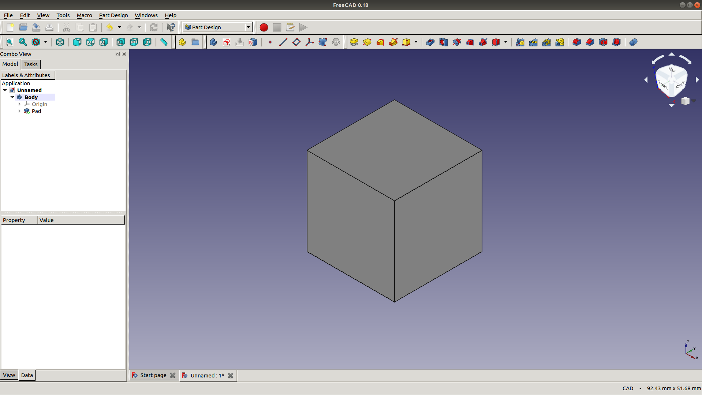
Cube extrudé
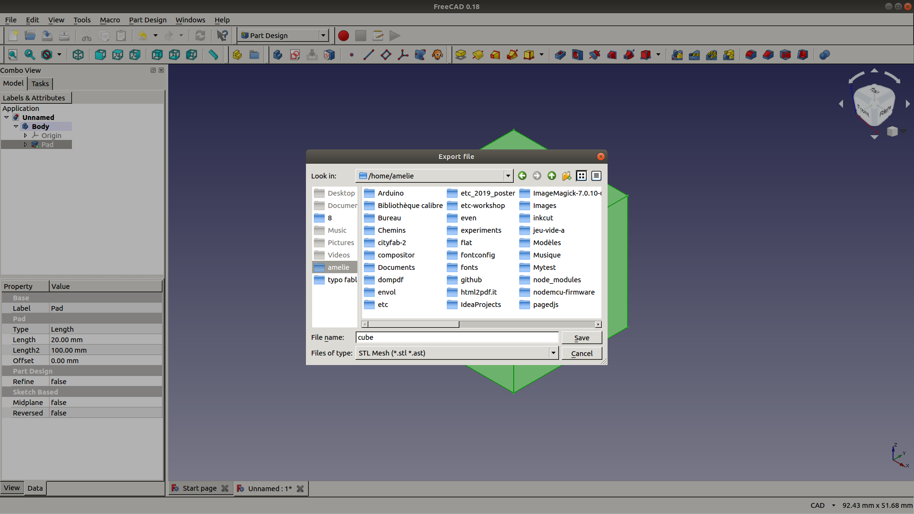
Exporter l'objet 3D au format STL
Utiliser les contraintes dans Freecad
Les contraintes sont une composante essentielle de Freecad puisqu'elles permettent de rendre l'objet créé paramétrique. On s'en sert par exemple pour déterminer la longueur de côté d'un objet, le rayon d'un cercle, si l'on veut que deux segments soient perpendiculaires, etc. Le grand avantage de les utiliser est que l'on peut changer les paramètres plus tard, et notre objet s'adapte automatiquement à ses nouvelles cotes.
Marche à suivre
Les contraintes se trouvent à droite de la barre d'outil supérieure de la fenêtre de Freecad quand on se trouve dans l'atelier Sketcher . Attention à ne pas les confondre avec les outils de dessin, qui se trouvent également dans cette barre d'outil et sont eux aussi de couleur rouge.
On peut contraindre un cercle à avoir un rayon donné avec la contrainte Radius , où l'on rentre dans une boîte de dialogue le rayon souhaité. Dans la dernière version de Freecad, on peut choisir si l'on veut contraindre le rayon ou le diamètre d'un cercle.
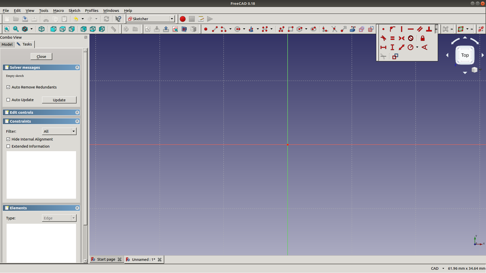
Outils de contrainte dans le menu
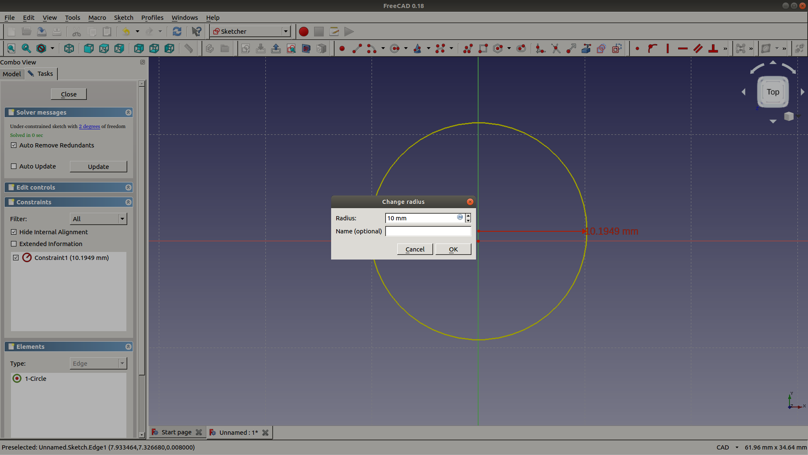
Contraindre le rayon d'un cercle
Une autre contrainte intéressante est de faire concorder deux points, autrement dit de faire en sorte que deux points différents deviennent le même point. Cette contrainte est Point on point. Sélectionnez les deux points à faire concorder puis cliquez sur la contrainte.
Dans le cas de polygones, on peut utiliser les contraintes Set horizontal et Set vertical pour forcer des côtés à être alignés sur l'axe des abscisses ou sur celui des ordonnées.
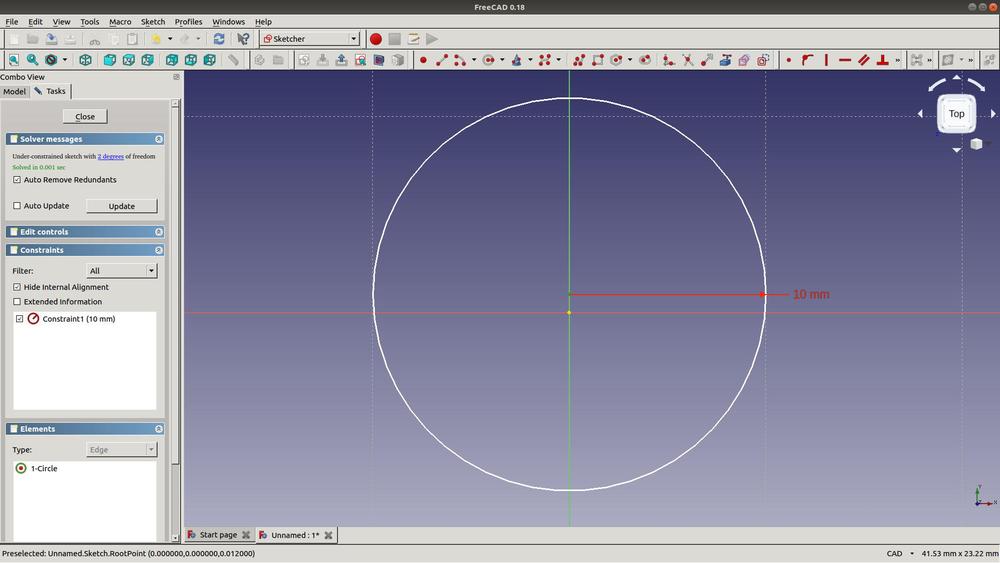
Fusionner deux points
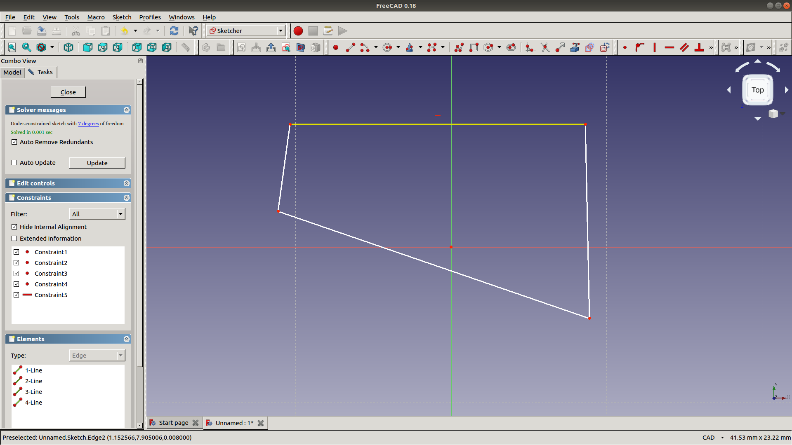
Contrainte d'horizontalité et de verticalité
Pour faire en sorte que deux segments soient rigoureusement parallèles, il y a la contrainte Parallel , qui s'utilise en sélectionnant les deux segments à aligner puis en cliquant sur la contrainte.
Pour paramétrer la longueur d'un segment, on utilise les contraintes Set horizontal length ou Set vertical length en fonction de l'orientation du segment.
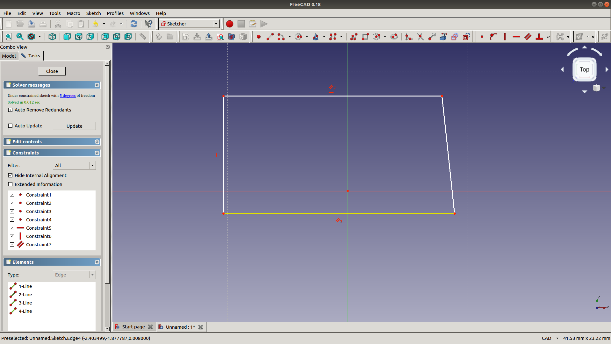
Contrainte de parallélisme entre deux lignes
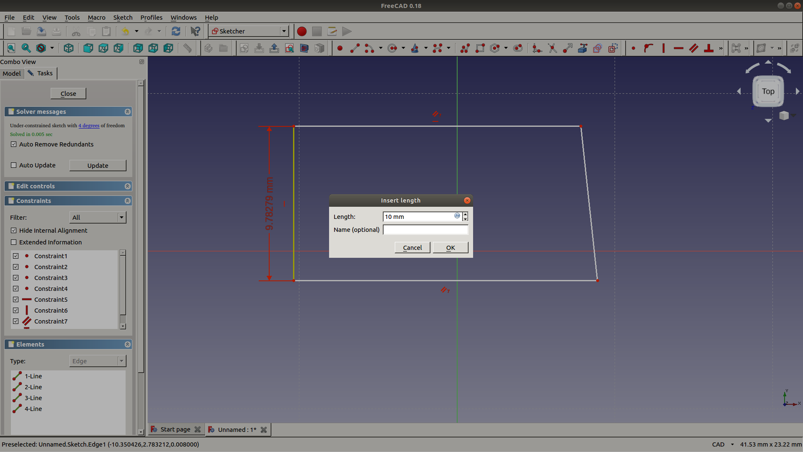
Déterminer la longueur d'un segment
Si l'on souhaite que deux segments se croisent selon un angle manuellement déterminé, on utilise la contrainte Set angle between two lines qui nous permet de définir paramétriquement cet angle.
Prenez le temps d'essayer toutes les contraintes, celles-ci permettent de faire appel à des règles géométriques scrupuleuses dans vos esquisses et restent modifiables à tout moment si vous souhaitez adapter votre objet plus tard.
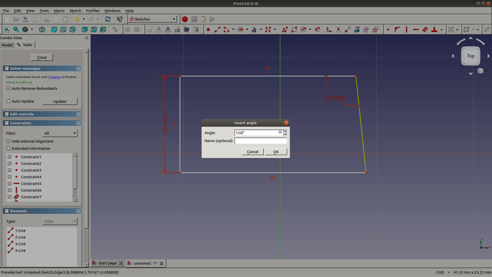
Définir un angle entre deux lignes
Utiliser les opérations booléennes dans Freecad
Freecad permet d'appliquer des opérations booléennes à différents objets 3D afin de les assembler, de ne garder que leur intersection, leur différence, ou encore de les fusionner.
Marche à suivre
On peut utiliser les opérations booléennes dans l'atelier Part de Freecad. Celles-ci se trouvent dans la barre d'outils supérieure de la fenêtre, elles sont représentées par deux sphères superposées.
Si vous avez créé un objet 3D dans l'atelier Part design, il se retrouvera dans l'atelier Part . Sinon, on peut créer directement des solides réguliers tels que des sphères, des cylindres, des cubes ou encore des cônes. en cliquant sur leurs icônes : , ,, , .
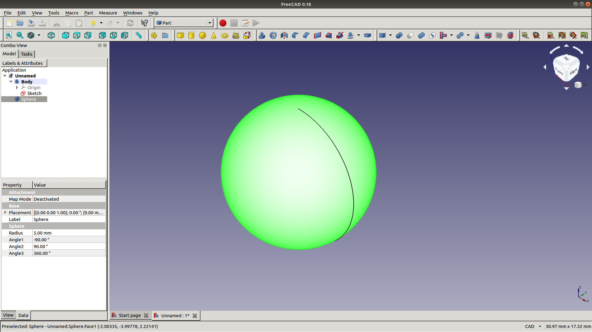
Atelier « Part »
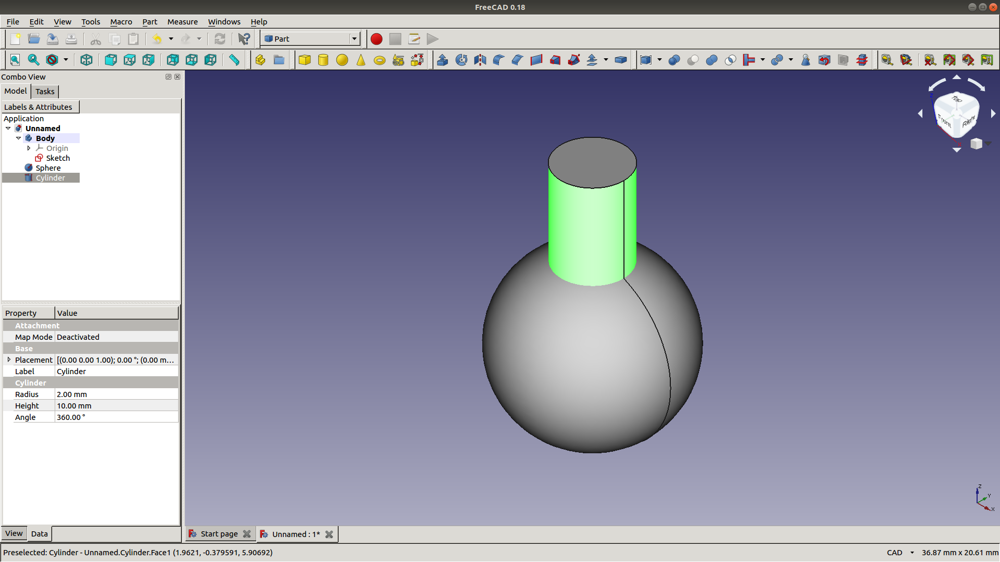
Solides générés dans l'atelier « Part »
Par défaut les objets 3D se retrouvent au milieu du repère. Pour déplacer l'un d'entre eux, il faut le sélectionner dans l'arborescence du projet, déplier la propriété Placement dans le menu de gauche, sélectionner la sous-propriété Position, et faire varier les valeurs x, y et z pour le déplacer selon les différents axes du repère.
Pour réaliser une opération booléenne entre deux objets, il faut cliquer sur l'icône Create boolean operation. Une boîte de dialogue s'ouvre alors dans le menu de gauche. L'ordre dans lequel vous sélectionnez les objets compte dans le résultat de l'opération booléenne : vous devez déterminer quelle est la première forme à traiter, puis la seconde en cochant les checkboxes dans First shape et Second shape. Il faut également sélectionner le type d'opération booléenne à réaliser entre Union, Difference et Intersection .
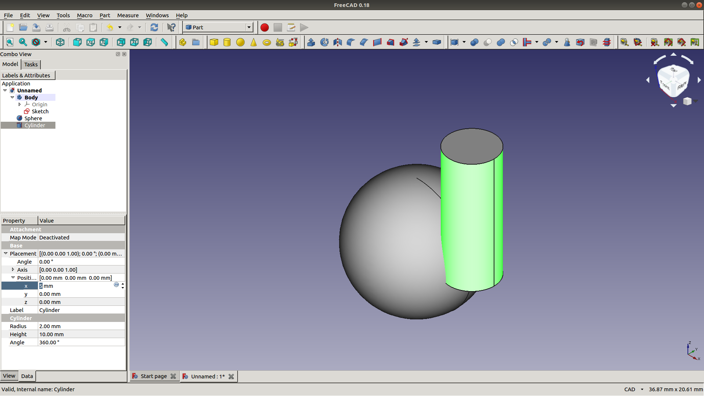
Modifier le placement d'un objet
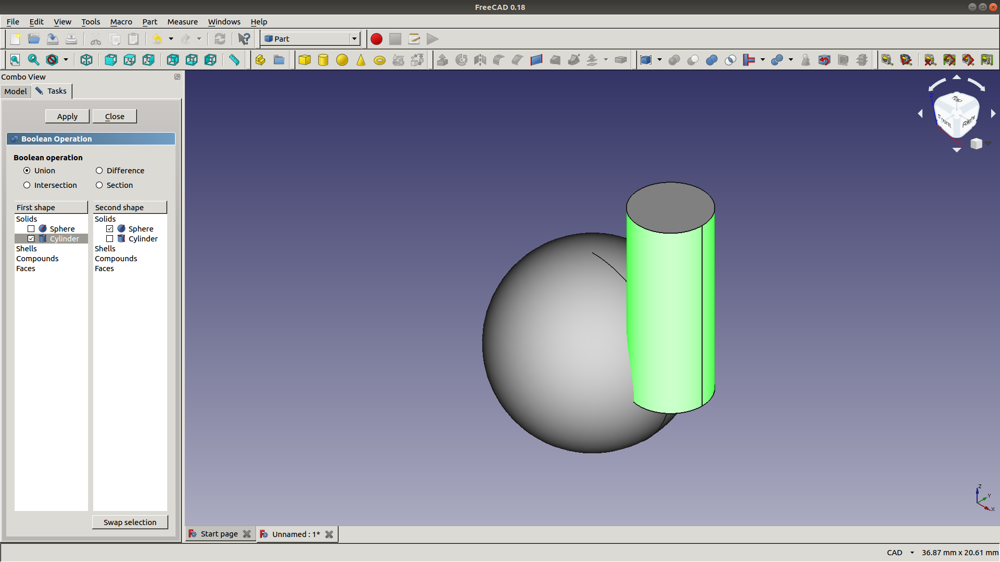
Menu des opérations booléennes
Une fois l'opération faite, vous pouvez voir dans l'arborescence du projet que les deux objets 3D sont devenus un même objet portant le nom de l'opération booléenne réalisée dessus.
Les opérations booléennes sont particulièrement utiles pour obtenir des croisements entre deux objets 3D qu'on ne pourrait pas avoir autrement. Par exemple si on place une sphère à l'intérieur d'un cube, on peut obtenir différents résultats selon l'opération booléenne effectuée et l'ordre des objets.
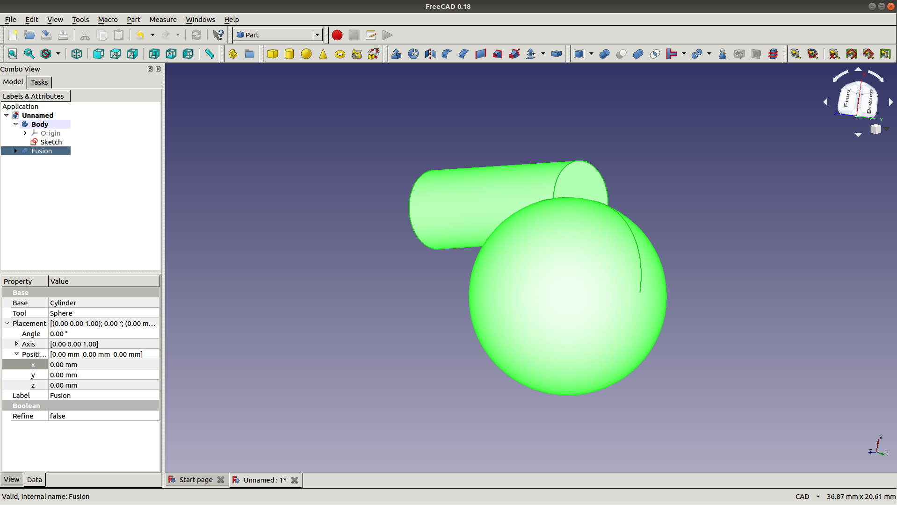
Solide fusionné
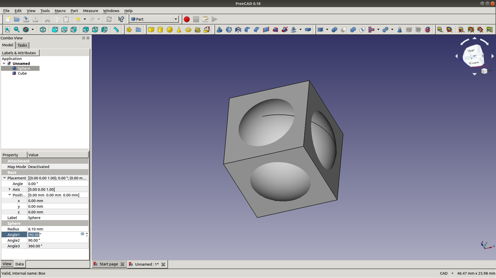
Entrelacer deux solides dans l'atelier « Part »
La Difference exclut de la première forme les parties communes aux deux objets.
Si on inverse l'ordre de sélection des solides, la Difference donne un tout autre résultat.
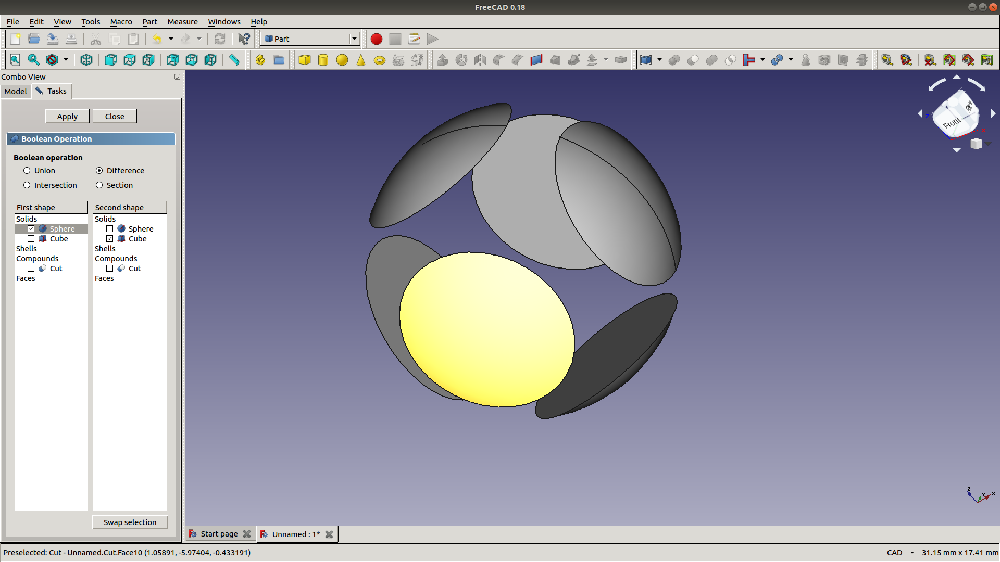
« Difference » avec la sphère comme première forme
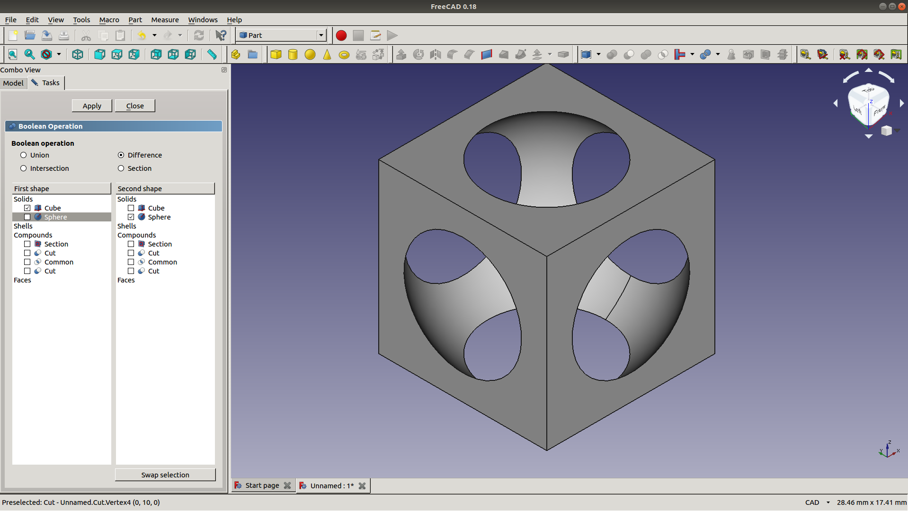
« Difference » avec le cube comme première forme
Modéliser un solide sur un autre dans Freecad
Freecad est un logiciel très complet permettant de modéliser des objets complexes. Nous allons voir comment ajouter une forme 3D sur une face d'un solide préalablement modélisé.
Marche à suivre
On part d'un pavé modélisé et extrudé dans l'atelier Part design. Pour plus d'informations sur la modélisation d'un tel objet, voir le projet « Modéliser un cube dans Freecad » (p. ).
Si l'on veut créer une nouvelle forme sur l'une des faces du pavé, il faut sélectionner la face en question, puis cliquer sur Create new sketch.
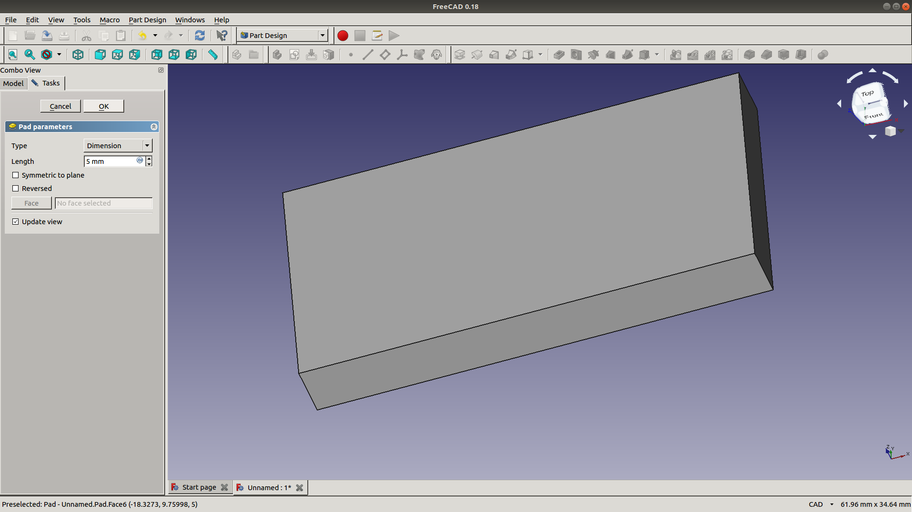
Solide de base
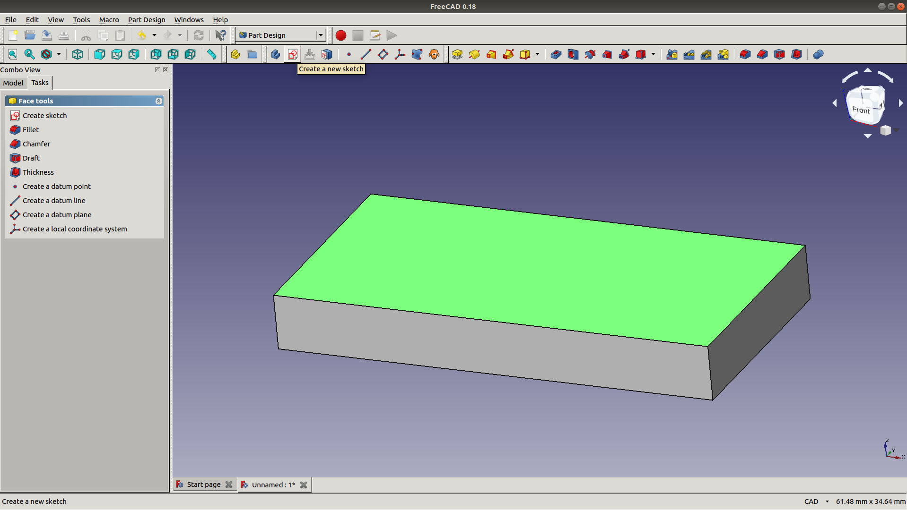
Sélectionner la face de la nouvelle esquisse
On se retrouve alors à nouveau dans l'atelier Sketcher , mais avec la face du solide préalablement sélectionnée comme arrière-plan. On peut alors y dessiner la ou les formes souhaitées et utiliser toutes les propriétés de l'atelier Sketcher telles que les contraintes (voir le projet « Utiliser les contraintes dans Freecad » p. ).
Une fois la nouvelle esquisse terminée, on peut l'extruder et ainsi obtenir des solides placés sur le solide de base. Il est possible de dessiner de nouvelles esquisses sur n'importe quelle face d'un objet 3D et ainsi d'obtenir un objet complexe.
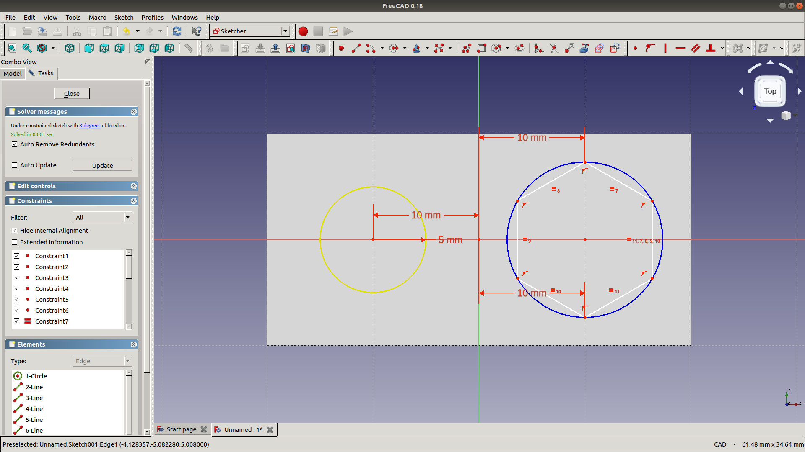
Dessiner la deuxième esquisse
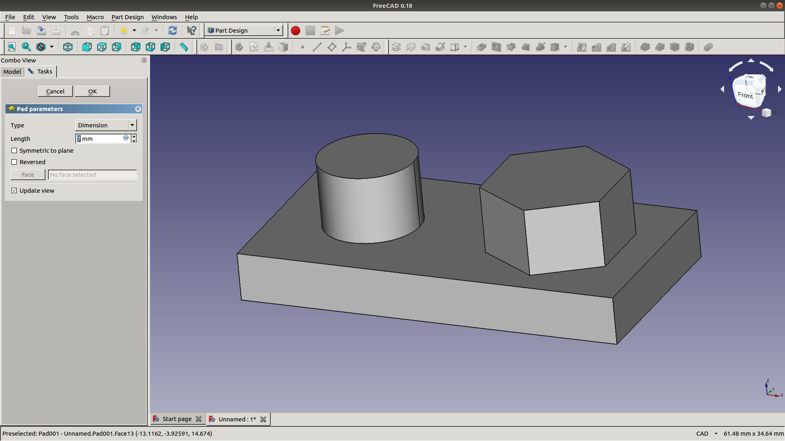
Extruder le deuxième objet 3D
Arrondis et chamfreins dans Freecad
Arrondis et chamfreins permettent d'adoucir ou de créer des profils particuliers dans les angles d'objets modélisés en 3D. C'est particulièrement utile dans le cas d'objets à découper avec une CNC, afin de rendre l'objet fabriqué plus ergonomique.
Marche à suivre
Pour appliquer un arrondi (« fillet » en anglais) sur une arête ou une face du solide, il faut, en se trouvant dans l'atelier Part Design, la sélectionner en cliquant dessus.
Puis il faut sélectionner l'outil Create fillet. Une boîte de dialogue s'ouvre dans le menu de gauche, vous y déterminez le rayon de l'arrondi.
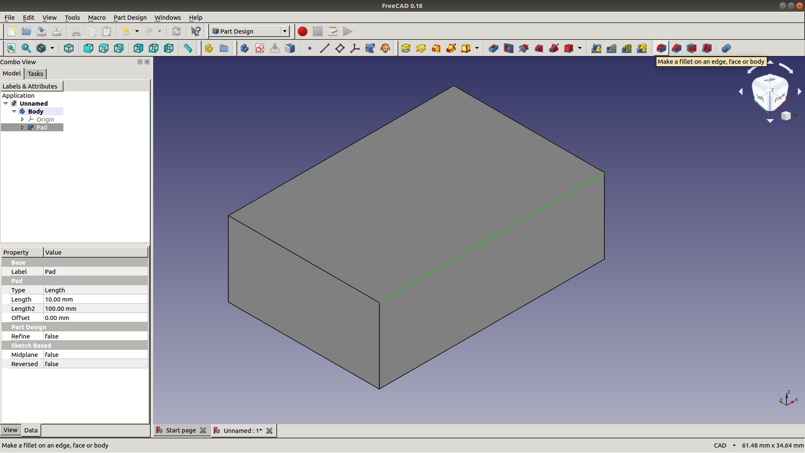
Sélectionner l'arête à arrondir
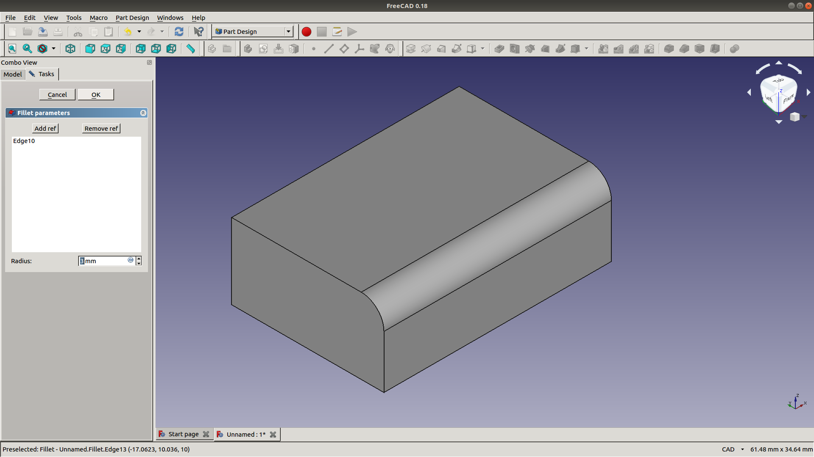
Paramètres de l'arrondi
Pour appliquer un chamfrein sur une autre arête, cliquez dessus pour la sélectionner.
Sélectionnez l'outil Create chamfer . De la même façon que pour faire un arrondi, la boîte de dialogue dans le menu vous permet de choisir la longueur du chamfrein.
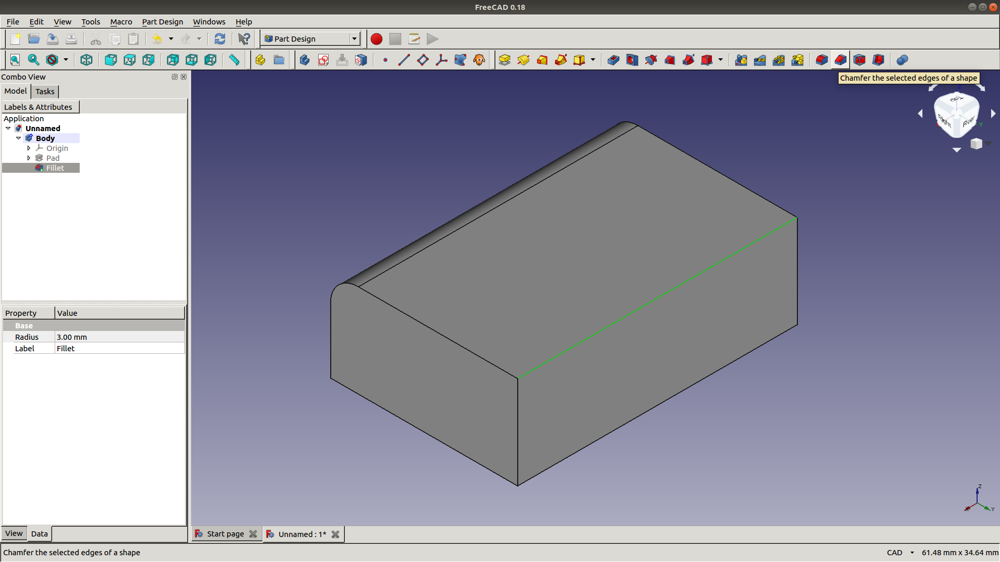
Sélectionner l'arête à chamfreiner
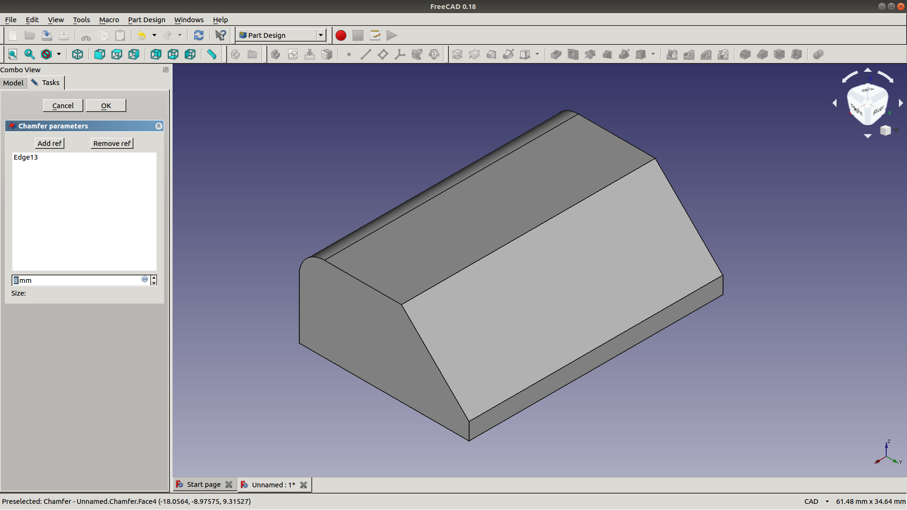
Paramètres du chamfrein
Faire des trous et des creux dans un solide avec Freecad
Si l'on veut doter de poches ou de trous un modèle, il est possible de retirer de la matière à des objets 3D grâce à des outils intégrés de Freecad.
Marche à suivre
À partir d'un solide modélisé au préalable (voir le projet « Modéliser un cube dans Freecad » p. pour cette partie), crééz un nouveau Sketch sur la face à laquelle vous voulez retirer de la matière et dessinez-y la forme désirée. Une fois l'esquisse terminée, cliquez sur l'outil Create a pocket de Part design.
Une boîte de dialogue dans le menu de gauche vous permet de déterminer la profondeur du creux dans la face du solide de base.
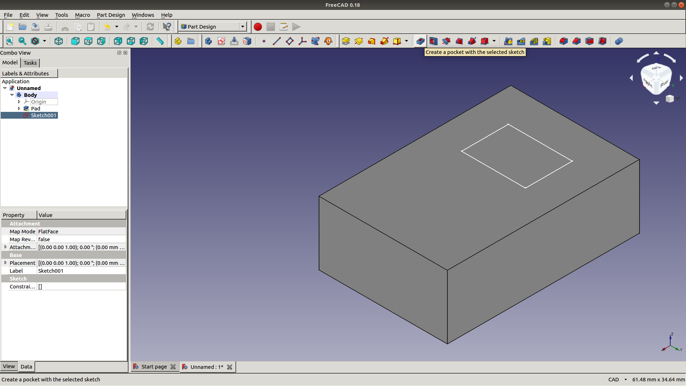
Faire l'esquisse du creux sur la face voulue
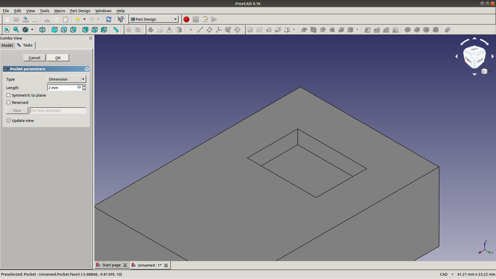
Régler la profondeur du creux
Pour créer un trou dans la matière, le procédé est similaire. Faîtes une nouvelle esquisse sur la face à creuser.
Quand l'esquisse est terminée, cliquez sur Create a hole dans Part design. Vous pouvez choisir dans la boîte de dialogue le diamètre du trou ainsi que sa profondeur.
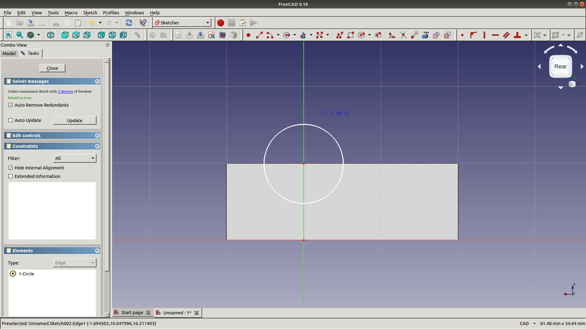
Esquisser le trou sur la face du solide de baseRégler les paramètres du trou
Utiliser les motifs de répétition de Freecad
Si l'on veut répéter un motif de manière régulière dans une modélisation 3D, Freecad dispose d'outils pour gérer la disposition du motif.
Marche à suivre
On part d'un solide de base modélisé dans l'atelier Part design (voir le projet « Modéliser un cube dans Freecad », p. ), sur lequel on a créé un nouveau Sketch puis extrudé la forme dessinée sur la face du solide de base (voir le projet « Modéliser un solide sur un autre dans Freecad » p. à ce propos).
Pour appliquer un motif de répétition, il faut tout d'abord sélectionner le solide à répéter.
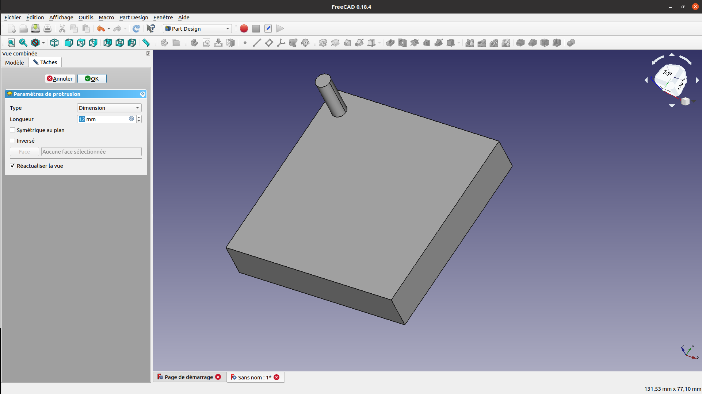
Solide de base avec un objet extrudé dessus
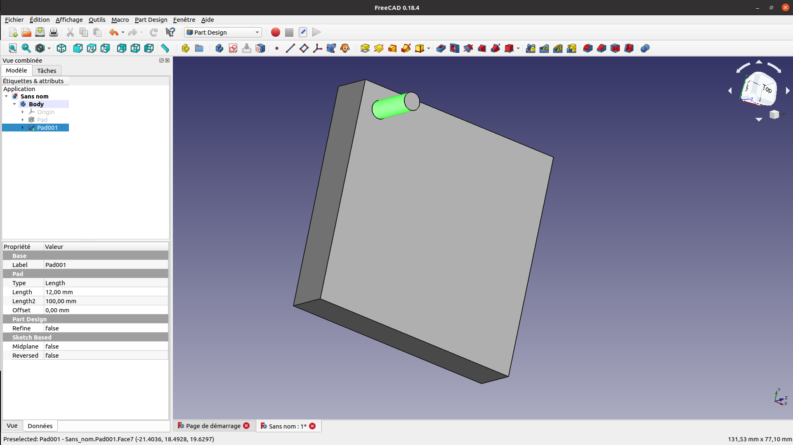
Sélectionner le solide à répéter selon un motif
Pour obtenir une répétition de motif linéaire il faut cliquer sur l'outil Create linear pattern. Dans la boîte de dialogue on peut régler la longueur sur laquelle se produit la répétition ainsi que le nombre d'occurrences. La transformation ne pourra pas se faire tant qu'au moins une occurrence de la répétition dépasse du solide de base.
Si l'on veut appliquer un motif de répétition circulaire, il faut sélectionner le solide à répéter puis cliquer sur l'outil Create circular pattern. De la même façon que pour la répétition linéaire, la boîte de dialogue permet de régler l'angle selon lequel se produit la répétition ainsi que le nombre d'occurrences.
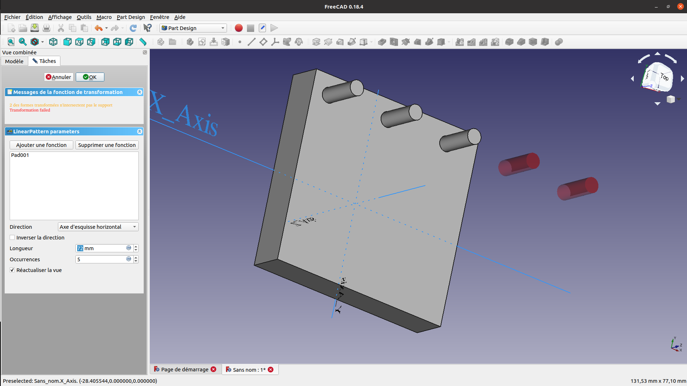
Paramétrer la répétition du motif
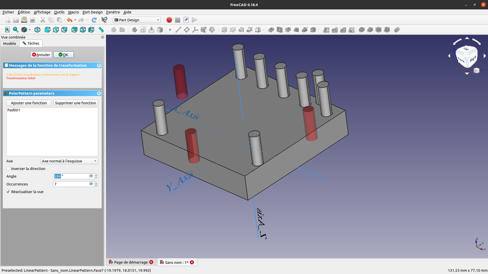
Motif de répétition circulaire
On peut également choisir l'axe selon lequel va se produire la répétition du motif. Le choix de cet axe change tout à fait la disposition du motif.
Pour obtenir des motifs complexes il faut combiner les répétitions. Pour cela on fait appel à l'outil Create multitransform pattern. On trouve dans la boîte de dialogue les mêmes paramètres que pour les répétitions linéaires et circulaires simples, à la différence notable que lors d'une multi-transformation, vous n'obtiendrez pas le même résultat en fonction de l'ordre des transformations.
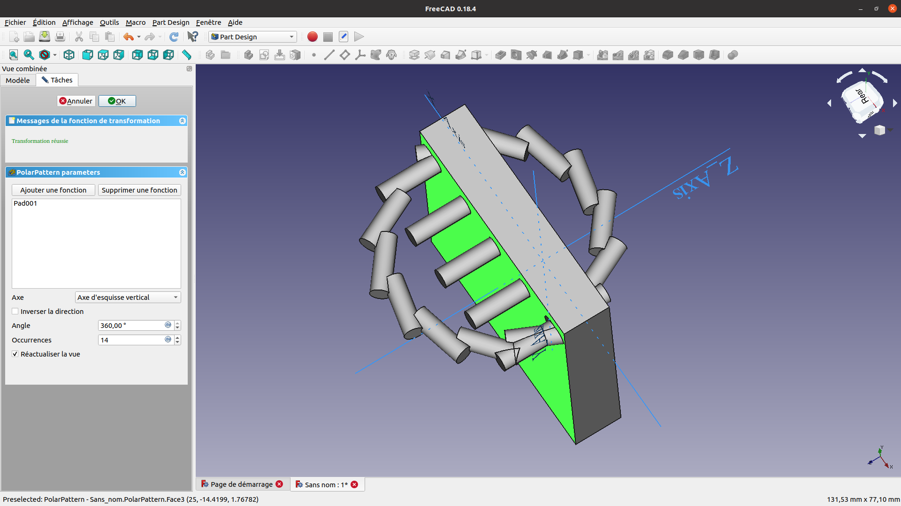
Même répétition circulaire mais selon un autre axe
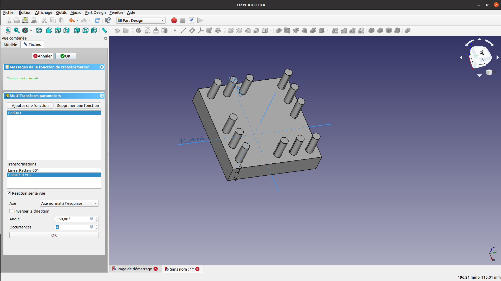
Multi-transformation
Impression 3D
Préparer l'impression 3D dans Cura
Cura est un slicer, un logiciel qui permet de décomposer un objet à imprimer en 3D en un certain nombre de couches superposées déterminé par différents paramètres.
Marche à suivre
La première chose à faire lorsqu'on ouvre Cura est de choisir l'imprimante 3D. Il existe des profils intégrés pour les imprimantes les plus répandues sur le marché, mais si votre machine ne se trouve pas dans la liste vous pouvez créer un profil personnalisé dans lequel vous rentrerez toutes ses fonctionnalités et détails techniques. Pour importer votre objet 3D, cliquez sur l'icône de dossier en haut à gauche.
Si vous cliquez sur votre objet importé, vous verrez une barre d'outils apparaître à gauche de la fenêtre. Le premier outil permet de déplacer votre objet sur le plateau. Le second outil permet de redimensionner votre objet, proportionnellement ou non. Le troisième outil permet de le faire pivoter (cela est particulièrement utile si vous imprimez un objet complexe pour lequel vous avez besoin que les supports soient placés d'une certaine façon), etc.
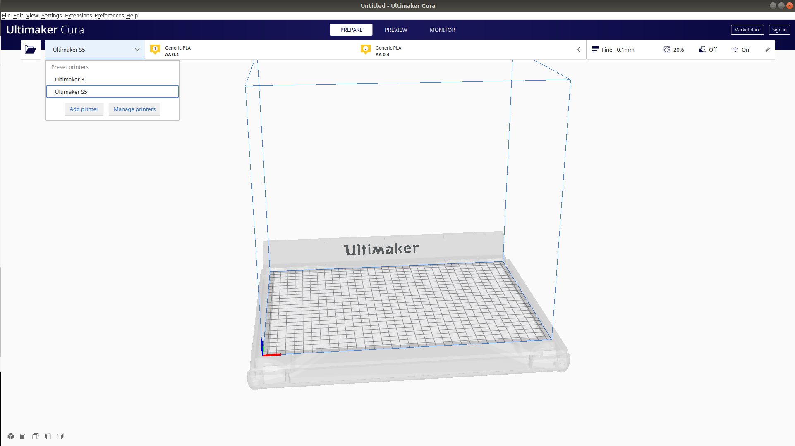
Choisir l'imprimante 3D
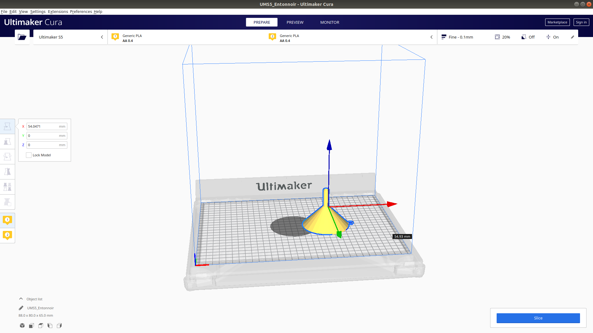
Déplacer, redimensionner, pivoter l'objet 3D
Si vous souhaitez imprimer votre objet en plusieurs exemplaires, faîtes un clic-droit dessus et sélectionnez Multiplier les objets sélectionnés.
Une fois votre ou vos objets placés à votre guise, cliquez au milieu de la barre d'outils supérieure pour sélectionner parmi la liste proposée le matériau dans lequel votre objet va être imprimé (il va de soi que le matériau sélectionné doit également être positionné dans l'extrudeur de la machine avant de lancer l'impression).
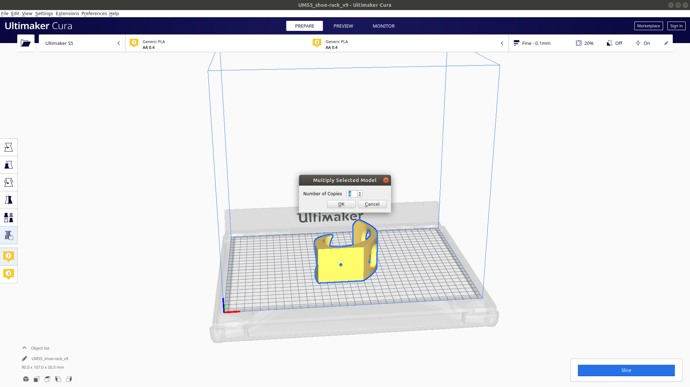
Multiplier les objets
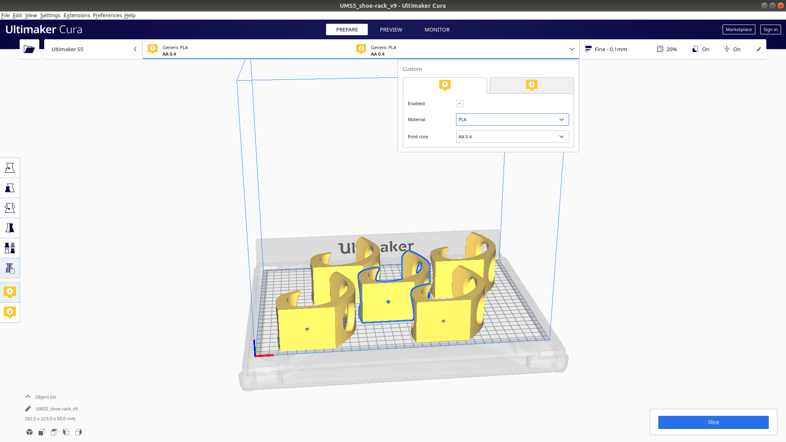
Choix du matériau d'impression
Ensuite, il est temps de passer aux paramètres d'impression 3D. La première chose à régler est l'épaisseur de couche de l'impression. Plus l'épaisseur est importante, plus l'impression sera rapide, mais la finition sera plus imprécise. Pour un résultat plus net mais plus long à imprimer, choisissez une faible épaisseur de couche.
Le deuxième paramètre important est le remplissage de l'objet. Plus celui-ci est dense, plus le temps d'impression est long, mais cela solidifie la pièce. Il n'est cependant pas nécessaire de remplir complètement une pièce pour qu'elle soit solide. 20% de remplissage est une bonne valeur. Vous pouvez choisir différents motifs de remplissage, chacun ayant ses propriétés, dans le menu déroulant.
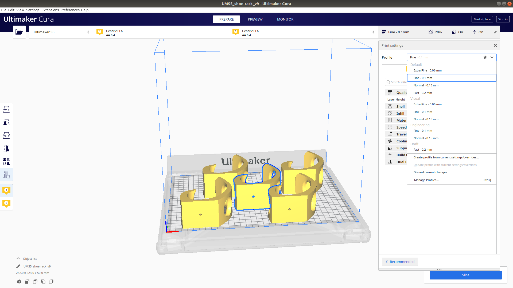
Épaisseur des couches d'impressionRemplissage de l'impression
Il est important de vérifier les températures d'impression : celle de la buse ainsi que celle du lit d'impression. Cura vous propose automatiquement des valeurs pour chaque type de matériau, mais tous les filaments ne correspondent pas exactement à ces températures standard. Si votre fil a du mal à être extrudé, augmentez la température de la buse. Si votre objet se décolle du lit pendant l'impression, essayez d'augmenter la température du plateau.
Autre paramètre important : activer les supports d'impression. L'imprimante va imprimer un surplus de matière autour de l'objet dans les premières couches afin de garantir le bon maintien de l'objet sur le lit au cours de l'impression, et de placer correctement des parties en hauteur de l'objet n'ayant pas de contact avec le lit.
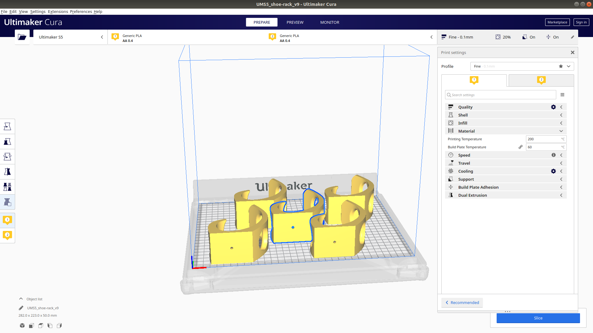
Température de la buse et du lit d'impression
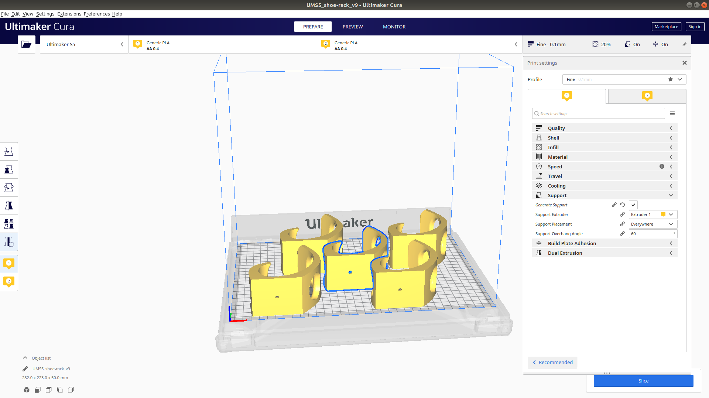
Ajouter des supports autour de l'objet imprimé
Une fois que les paramètres d'impression sont bons, cliquez sur Slice. L'objet est alors transformé en fichier G-CODE reprenant les paramètres venant d'être déterminés. Vous pouvez prévisualiser les couches de votre impression avant de sauver le fichier sur une carte SD ou une clé USB.
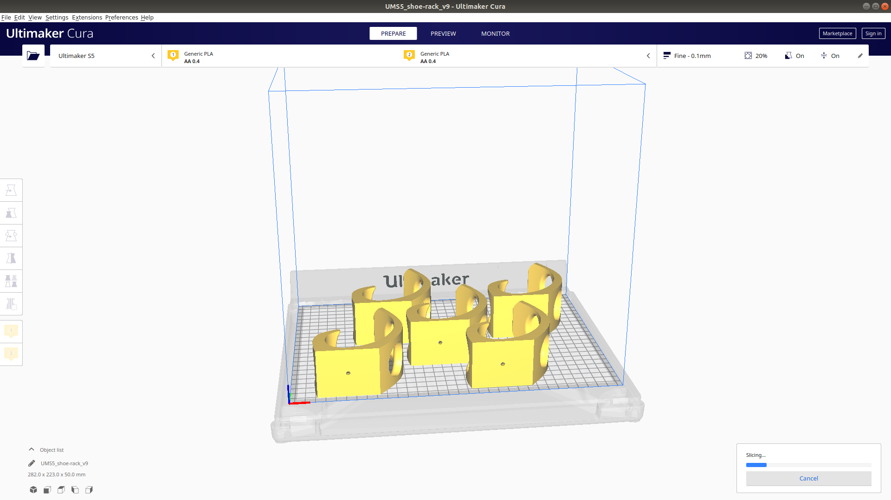
Trancher le modèle
Préparer l'impression 3D avec Repetier Host
Repetier Host est un slicer open source avec lequel on peut préparer l'impression 3D d'un objet.
Marche à suivre
Sélectionnez tout d'abord le profil de l'imprimante 3D que vous souhaitez utiliser en cliquant sur Réglages imprimante en haut à gauche. Pour importer un objet 3D, cliquez sur l'icône + entourée d'un cercle ou sur Charger en haut à gauche.
C'est également dans cet onglet que se font les réglages concernant la température de l'extrudeur ainsi que celle du lit. Dans Repetier Host, on ne définit pas le matériau qui va servir à l'impression, mais les températures d'impression. Renseignez-vous donc sur les températures de l'extrudeur et du lit d'impression propres à chaque matériau (en général indiquées sur la boîte du filament).
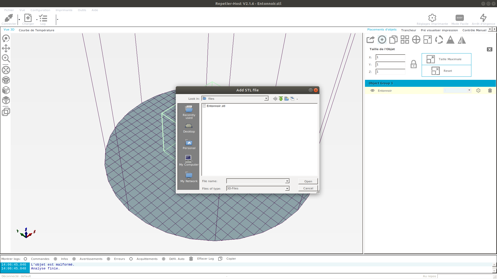
Choisir l'imprimante 3D
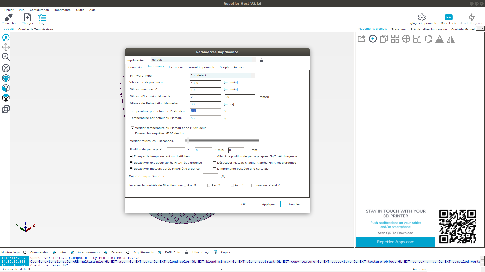
Régler la température de l'extrudeur et du lit d'impression
Dans l'onglet Placement d'objets du menu de gauche on trouve un outil permettant de redimensionner l'objet.
On trouve dans la même barre des outils pour déplacer ou faire pivoter l'objet. Cela se révèle utile si votre objet a une forme complexe et que vous voulez placer les supports d'impression d'une certaine façon.
Redimensionner l'objet 3DPivoter l'objet 3D
Pour trancher l'objet, il faut se rendre dans l'onglet Trancheur. Vous pouvez sélectionner différents trancheurs dans le menu déroulant, mais Slic3r est un bon trancheur et fonctionne très bien dans Repetier Host. Pour lancer le tranchage, cliquez sur le bouton Trancher avec Slic3r.
Une fois le tranchage fait on se retrouve dans l'onglet Pré visualiser impression, où on peut voir les couches de l'impression à venir. C'est ici qu'on peut enregistrer le fichier G-CODE sur un périphérique.
Trancher avec Slic3rObjet 3D tranché prêt à être exporté
Découpe laser
Préparer un fichier à découper ou à graver avec Inkscape
Inkscape est un logiciel libre de dessin vectoriel utilisant le format SVG, un format d'image vectorielle open source. Grâce aux outils qu'il propose, on peut s'en servir pour créer des visuels destinés à la découpe ou la gravure laser.
Marche à suivre
Quand on ouvre Inkscape, on a devant soi un document vierge. La première chose à faire est de mettre le document, par défaut au format A4, au format du dessin que vous souhaitez faire. Pour cela, allez dans Fichier > Propriétés du document, et là, dans la boîte de dialogue, vous pouvez changer les dimensions de la page. Pour que le zoom corresponde bien à votre page, cliquez sur Affichage > Zoom > Page.
La barre d'outils à gauche de l'écran contient des outils permettant de dessiner des formes : Ellipse , Rectangle ou encore Polygone . Chaque fois que vous créez une forme, vous pouvez modifier ses paramètres dans la barre d'outils du haut de la fenêtre pour obtenir des formes sur mesure. Il faut bien comprendre qu'en découpe/gravure laser, on ne fait que brûler le matériau ; d'autre part il n'y a pas d'aplats, le laser ne pouvant dessiner que des traits de la largeur de son faisceau. Il faut donc bien avoir à l'esprit que le dessin doit être travaillé en contours car c'est tout ce que la machine sera capable de reproduire.
Redimensionner la page au format du dessinUtiliser les formes de base et leurs paramètres
Pour afficher le document uniquement en contours, et ainsi visualiser précisément ce que la machine laser reproduira, allez dans le menu Affichage > Mode d'affichage > Contours.
Pour le dessin, il y a aussi un outil Stylo qui permet de dessiner une forme vectorielle en plaçant des points dans le document. Si vous tirez les poignées au moment où vous placez le point, cela crée des courbes.
L'outil Texte permet de taper un texte au clavier dans le document. Quand il est sélectionné, les propriétés du texte apparaissent dans la barre d'outil supérieure. On peut changer le corps du texte, la police utilisée, l'interlignage, etc. Vous remarquez alors que, bien que votre affichage soit en mode Contours, vous voyez le texte à l'écran avec un fond noir. C'est parce que le texte que vous venez de taper n'est pas vectorisé. Pour ce faire, sélectionnez le texte et cliquez sur Chemin > Objet en chemin, puis sur Objet > Dégrouper. Chaque lettre est alors vectorisée et sélectionnable individuellement.
Affichage en « Contours »Ajouter du texte dans le dessin
Il existe une extension particulièrement appropriée pour graver du texte au laser, Texte Hershey. Les fontes Hershey sont une famille de typographies vectorielles, dessinées par le squelette plutôt que par le contour (on n'a donc pas besoin de se préoccuper de les vectoriser). Pour utiliser l'extension, créez un bloc de texte, sélectionnez-le puis allez dans Extensions > Texte > Texte Hershey. Dans la boîte de dialogue qui s'affiche, vous pouvez modifier le texte et choisir quelle typographie de la famille utiliser.
Une fois votre dessin prêt, assurez-vous que tout est bien transformé en chemin et que rien ne dépasse du format (sauf si vous souhaitez avoir un fond perdu). Le format sous lequel exporter le fichier dépend du logiciel qui communique avec le contrôleur de la découpeuse laser. Si celui-ci accepte le format SVG, sauvegardez tout simplement le document. Pour exporter le fichier au format DXF, format standard pour les tables traçantes, cliquez sur Fichier > Enregistrer sous, puis sélectionnez le format Table traçante ou coupante (Autocad DXF R14).
Extension « Texte Hershey »Enregistrer le fichier au format SVG ou DXF
Vectoriser une image à graver
La découpe laser ne pouvant reproduire ni les couleurs ni les surfaces pleines d'ume image, il faut vectoriser celle-ci afin de pouvoir la graver. Plusieurs solutions à cela : transformer les contrastes de l'image originelle en trames, ou ne garder que les contours de ce qu'elle représente.
Marche à suivre
Inkscape possède un outil de vectorisation d'images. Pour l'utiliser, il faut sélectionner l'image à traiter (après l'avoir importée dans le document avec Fichier > Importer...) et aller dans Chemin > Vectoriser un objet matriciel. Étant donné qu'on ne peut graver que des lignes, on utilisera la fonction Détection de contour qui va tracer automatiquement les contours repérés dans l'image. En jouant sur les différents paramètres on obtient une détection plus ou moins sensible.
La détection de contour d'Inkscape se base sur les contrastes et les différences de couleurs trouvés dans l'image originelle.
Outil « Vectoriser un objet matriciel »Résultat de la détection de contour
Une autre fonction de vectorisation d'objet matriciel que l'on peut utiliser pour obtenir des contours est Autotrace, qui utilise un autre algorithme de vectorisation des images matricielles.
Avec Autotrace, le résultat dépend énormément des contrastes de l'image d'origine. Plus ceux-ci sont marqués, plus l'algorithme détectera des surfaces à remplir de lignes. Cette fonction vectorise de manière moins précise, mais donne des résultats plus artistiques.
Vectoriser avec « Autotrace »Résultat de l'outil « Autotrace »
Si Inkscape ne suffit pas à obtenir une vectorisation satisfaisante, il existe un site web qui permet d'appliquer les algorithmes de rasterisation utilisés pour les plotters et de télécharger au format SVG l'image transformée : mitxela.com/plotterfun. Chaque algorithme répertorié donne un résultat singulier, il faut prendre le temps de tous les essayer. À partir de chaque algorithme on peut modifier les paramètres de traitement de l'image pour des résultats allant du simple tramage à la déformation artistique. Lorsque le résultat vous satisfait, cliquez sur Download SVG
On récupère alors notre image vectorisée selon un algorithme au format SVG, qu'on peut ouvrir dans Inkscape pour préparer le fichier à la gravure laser.
Rasterisation avec PlotterFunImage SVG récupérée depuis PlotterFun
Exporter un fichier DXF depuis Freecad
Le format DXF est utilisé par les découpeuses laser et les tables traçantes ; il s'agit d'un format de fichier 2D à l'origine propriétaire créé par Autodesk dont certaines versions sont tombées dans le domaine public.
Marche à suivre
On peut dessiner une forme traçable par une découpeuse laser dans Freecad en créant un Sketch depuis l'atelier Part design. On peut utiliser tous les outils de dessin disponibles ainsi que les contraintes si on veut pouvoir modifier le croquis paramétriquement. Pour plus d'informations sur le dessin paramétrique dans Freecad, voir les projets « Modéliser un cube dans Freecad » (p.) et « Utiliser les contraintes dans Freecad » (p.).
Une fois l'esquisse terminée, cliquez sur Close dans la barre de tâches. Pour exporter le fichier en DXF, sélectionnez l'esquisse dans l'arborescence du projet et cliquez sur Fichier > Exporter puis choisissez le format Autodesk DXF 2D.
Dessiner l'esquisse avec les outils de « Sketcher »Export au format DXF
CNC
Exporter un fichier G-CODE depuis Freecad
On peut utiliser Freecad pour modéliser un objet et générer le fichier G-CODE qui permettra l'usinage d'une pièce sur une fraiseuse à contrôle numérique.
Marche à suivre
On prend pour exemple un pavé extrudé de 10 mm dont la face supérieure est ponctuée de quatre trous et d'une poche centrale. Une fois l'objet voulu modélisé dans l'atelier Part design, on se déplace dans l'atelier Path (voir les projets du chapitre « Modélisation 3D », p. , pour plus d'informations sur la création d'objets 3D dans Freecad).
Il faut créer un Job pour l'usinage en cliquant sur l'outil Create job. Dans la première boîte de dialogue qui s'affiche, assurez-vous que le solide à usiner est bien sélectionné.
Aller dans l'atelier « Path » une fois l'objet modéliséCréer un nouveau « Job »
Ensuite, la boîte de dialogue dans le menu de gauche vous place dans l'onglet Setup de votre Job. On peut y déplacer l'origine de notre repère à l'aide des flèches en bas à gauche.
Rendez-vous dans l'onglet Tools pour sélectionner l'outil qui procèdera à l'usinage. Une liste des outils déjà configurés apparaît alors.
Définir l'origine du « Job »Sélectionner un outil
Pour modifier les paramètres de l'outil, sélectionnez-le puis cliquez sur le bouton Edit. C'est ici qu'on peut régler la vitesse de déplacement de l'outil ou encore son sens de rotation.
Si vous souhaitez configurer un nouvel outil et l'ajouter à votre liste, cliquez sur Tool editor. Une boîte de dialogue vous demande alors de renseigner le type de l'outil ainsi que ses cotes.
Modifier les paramètres de l'outilConfigurer un nouvel outil
Il faut maintenant déterminer les différentes actions de l'usinage. On commence par les découpes intérieures des quatre trous de la face supérieure de l'objet. Il faut les sélectionner en cliquant sur l'intérieur de leur creux. Pour obtenir une découpe circulaire, il faut créer une tâche Helix. Dans la boîte de dialogue qui s'affiche, vérifiez dans l'onglet Profondeurs que les valeurs Start depth et Final depth correspondent bien pour la première à la hauteur de la pièce entière, et pour la deuxième à cette hauteur moins celle du creux des trous (ici, puisqu'on perce l'objet, on doit finir à 0 mm).
Il faut créer une autre tâche pour creuser la poche de la face supérieure de l'objet. Pour ce type de creux non-circulaire, on utilise l'outil Create pocket shape après avoir sélectionné la poche en cliquant sur son fond ou bien sur l'intérieur de son creux. Dans la boîte de dialogue à gauche, vérifiez également dans l'onglet Profondeurs que les valeurs Start depth et Final depth correspondent bien pour la première à la hauteur de la pièce entière, et pour la deuxième à cette hauteur moins celle du creux de la poche. Vous pouvez également choisir le motif et l'angle selon lequel le fraisage de la poche sera effectué.
Créer une tâche « Helix » pour faire les trousCréer une tâche « Pocket » pour faire la poche
La dernière tâche à ajouter est la découpe extérieure de la pièce. Pour cela, on utilise l'outil Create profile qui va générer un chemin de découpe pour l'extérieur de la pièce.
Une fois toutes les tâches de l'usinage déterminées, on peut voir en rouge les déplacements de l'outil au-dessus de la pièce, et en vert les opérations de découpe.
Ajouter un « Profile » pour la découpe extérieure de la pièceLes chemins de découpe sont visibles
Pour pré-visualiser le fraisage de la pièce par la CNC, cliquez sur l'outil Simulate G-CODE Path . Vous pouvez alors voir l'ordre dans lequel vont se dérouler les opérations. Si vous souhaitez vérifier le G-CODE avant l'export du fichier, faîtes un clic-droit sur le Job dans l'arborescence du projet et sélectionnez Inspect G-CODE.
Quand le fichier est prêt à être exporté, cliquez sur Job dans l'arborescence du projet et choisissez dans la liste de sa sous-propriété Post Processor (dans la propriété Output) le post-processeur qui correspond au contrôleur de votre CNC. En effet Freecad utilise son propre dialecte de G-CODE et le transcrit au moment de l'export en fonction du contrôleur. Une fois ce réglage fait, cliquez sur l'outil Post process pour exporter le fichier G-CODE vers la destination de votre choix.
Pré-visualiser l'usinageExporter le fichier avec « Post process »
Exporter un fichier G-CODE depuis Inkscape
Inkscape dispose d'une extension permettant d'exporter un dessin au format G-CODE en vue de son usinage sur une CNC : GcodeTools. Cette méthode crée un fichier G-CODE dans lequel la profondeur d'usinage est uniforme ; cela ne convient pas à tous les types de travaux.
Dans Inkscape, commencez par mettre le document au format de votre matériau dans Fichier > Propriétés du document. Puis dessinez les chemins à découper (si vous avez besoin de davantage d'informations sur le dessin vectoriel dans Inkscape, voir le projet « Préparer un fichier à découper ou à graver avec Inkscape » p. ). S'il y a plus d'un chemin sur votre dessin, sélectionnez-les tous et faîtes Chemin > Combiner. Enfin sélectionnez votre chemin combiné et réglez l'épaisseur de son contour à la valeur égale au rayon de la fraise que vous allez utiliser pour l'usinage.
Allez dans Extensions > GcodeTools > Points d'orientation et réglez la valeur Profondeur sur l'axe Z selon la profondeur de découpe que vous souhaitez obtenir. Puis cliquez sur Appliquer.
Mettre le contour du chemin au rayon de la fraiseRégler les points d'orientation et la profondeur de l'axe Z
À présent deux triplets de points sont apparus en bas de la page. La flèche de celui de gauche doit impérativement pointer le coin inférieur gauche de la page et la flèche de celui de droite le coin inférieur droit de la page. Si ce n'est pas le cas vous pouvez redimensionner proportionnellement le bloc des triplets et adapter la première valeur du triplet de droite à la bonne dimension (la largeur du document).
Allez dans Extensions > GcodeTools > Bibliothèque d'outils et choisissez l'outil qui correspond à l'usinage que vous allez faire. Puis cliquez sur Appliquer.
Faire coïncider les triplets avec les coins bas du documentChoisir le type d'outil
Un cadre gris apparaît alors dans le document. Vous pouvez modifier ses valeurs, notamment le diamètre de l'outil, qui doit être celui de votre fraise à l'aide de l'outil Texte .
Allez dans Extensions > GcodeTools > Chemin vers G-code pour exporter le fichier. Dans l'onglet Préférences vous pouvez choisir le nom du fichier ainsi que le dossier où il sera sauvegardé. Cliquez sur Appliquer quand les options sont bonnes.
Vérifier les valeurs dans le cadre grisExporter le fichier en G-CODE
Gérer l'usinage d'un fichier G-CODE dans Mach3
Mach3 est un logiciel de type contrôleur CNC : il permet de contrôler le mouvement des moteurs de la machine par l'éxécution de fichiers G-CODE.
La CNC doit être allumée avant d'ouvrir Mach3 car le logiciel va chercher le contrôleur avec lequel il va communiquer. La première chose à faire lorsqu'on ouvre l'interface de Mach3 est de cliquer sur le gros bouton rouge Reset en bas à gauche pour stopper tous les processus qui pourraient encore être en cours sur la machine. Pour charger votre fichier G-CODE, cliquez sur le bouton Load G-code qui va vous permettre de parcourir les fichiers de l'ordinateur. Le contenu du fichier G-CODE choisi s'affiche alors dans la fenêtre en haut à gauche.
Si vous souhaitez modifier des lignes du fichier G-CODE, cliquez sur le bouton Edit G-code qui ouvrira alors le fichier dans un éditeur de texte.
Appuyer sur « Reset » et charger le fichier G-CODE
Il faut à présent positionner les axes de la machine à leurs origines. Pour ouvrir la fenêtre MPG mode, pressez la touche Tab du clavier. Les boutons rouges et verts permettent de déplacer négativement ou positivement chacun des quatre axes. Par défaut le Jog Mode est réglé sur Continuous. Ce mode déplace les axes en continu : aussi longtemps que vous pressez l'un des boutons verts ou rouges, l'axe continuera de se déplacer dans cette direction. Pour déplacer les axes de façon plus précise on peut régler le Jog Mode sur Step en cliquant sur le bouton. Quand ce mode est activé, les axes se déplacent selon les pas que l'on a définis (la valeur des pas se règle dans la case Cycle Jog Step).
Déplacer les axes en mode continu ou pas-à-pas
Quand les axes sont positionnés convenablement, cliquez sur les boutons Zero X, Zero Y et Zero Z pour définir l'emplacement de l'origine de chacun des axes. Les valeurs numériques des axes passent alors à 0.0000.
Déterminer l'origine des axes X, Y et Z
Pressez à nouveau la touche Tab du clavier pour quitter la fenêtre MPG mode. Allumez le moteur de la fraise sur la machine si ce n'était pas déjà fait et lancez l'usinage en cliquant sur le bouton vert Cycle Start.
Lancer l'usinage avec « Cycle start »
L'onglet Tool Path de Mach3 permet également de contrôler l'usinage tout en offrant une fenêtre d'affichage du travail en cours plus grande. Vous pouvez voir pendant l'usinage comment Mach3 parcourt les lignes de G-CODE une par une dans la fenêtre en haut à gauche. En cas de problème pendant l'usinage, cliquez sur Stop pour mettre fin au travail en cours. Ne pressez le bouton Reset en cours d'usinage qu'en cas de problème majeur car lorsque ce bouton est pressé toute la configuration que vous aviez faite est perdue.
Contrôler le bon déroulement de l'usinage
Arduino
Montage électronique en série
Avant de commencer à programmer avec l'Arduino, voyons les rudiments de l'électronique. Un circuit monté en série rend les composants dépendants les uns des autres et de l'ordre dans lequel ils sont placés. Dans ce premier circuit, nous allons utiliser l'Arduino comme source d'alimentation.
On commence par brancher le 5V et le GND de l'Arduino à la breadboard pour l'alimenter.
Ensuite on place une résistance de 220 Ω entre le 5V et le premier bouton. Reliez la sortie du premier bouton à l'entrée du second.
Puis reliez la sortie du second bouton à l'anode (patte la plus longue) de la LED.
Enfin reliez l'autre patte de la LED au GND.
Manipuler le circuit
Pressez chaque bouton séparément et observez ce qu'il se passe.
Pressez ensuite les deux boutons en même temps. La LED s'allume seulement dans ce cas. C'est normal puisque le circuit est monté en série : le courant ne circule vers le deuxième interrupteur que si le premier est pressé, et vers la LED que si les deux interrupteurs sont pressés. Le fonctionnement du circuit est donc bien dépendant de l'ordre du montage.
Montage électronique en parallèle
À l'inverse du montage en série, un montage en parallèle relie indépendamment chaque composant à l'alimentation, ce qui permet au courant d'emprunter plusieurs chemins à la fois.
On commence par brancher le 5V et le GND de l'Arduino à la breadboard pour l'alimenter.
Reliez la résistance de 220 Ω aux deux interrupteurs à la fois, puis connectez la sortie de chaque interrupteur à la LED.
Manipuler le circuit
Pressez un bouton puis l'autre, et les deux en même temps et observez ce qu'il se passe.
La LED s'allume dans tous les cas. C'est logique si on se penche sur le circuit : les deux boutons sont alimentés de manière indépendante et reliés à le LED, le courant peut donc trouver son chemin via un bouton ou l'autre. Les éléments sont indépendants de l'ordre du montage.
LED + 2 boutons
On va commencer la programmation de l'Arduino avec un projet simple : contrôler une LED avec 2 interrupteurs et des conditions différentes sur chacun (if/else) qui détermineront le comportement de la LED.
Branchez l'un des interrupteurs au 5V et à la broche digitale 2 de l'Arduino.
Connectez le deuxième bouton au 5V et à la broche digitale 3.
La LED doit être connectée à la broche digitale 12 sur son anode (côté le plus long) et par sa cathode rejoindre le GND à travers une résistance de 220 Ω.
Le code
Ouvrez votre IDE Arduino. Lorsque vous ouvrez un nouveau sketch, vous pouvez voir deux fonctions vides.
La première fonction, setup(), gère ce que l'Arduino doit initialiser au démarrage du sketch. La seconde fonction, loop() contient le code qui se répète indéfiniment (tant que le sketch tourne), généralement les actions du script.
Passons à notre code : voici les premières lignes du script. Tout d'abord nous initialisons deux variables, switchState1 et switchState2 qui nous permettront de stocker l'état de chacun des deux boutons (pressé ou relâché). Pour commencer nous définissons la valeur à 0, donc relâché.
Ensuite on définit le mode des broches utilisées : puisqu'on récupére les valeurs d'état des interrupteurs, ceux-ci sont en mode INPUT, la broche de la LED, elle, se contentera de recevoir un signal électrique quand on veut l'allumer, elle est donc un OUTPUT.
voidsetup() {
}
voidloop() {
}
int switchState1 = 0;
int switchState2 = 0;
voidsetup() {
pinMode(2, INPUT);
pinMode(3, INPUT);
pinMode(12, OUTPUT);
}
Décomposons la suite du code : dans la fonction loop(), nous commençons par actualiser les valeurs des variables switchState1 et switchState2. Nous leur demandons à présent de lire perpétuellement les valeurs lues par les broches 2 et 3 de l'Arduino. Les broches 2 et 3 sont digitales, ce qui signifie qu'elles ne renvoient des valeurs qui ne peuvent être égales qu'à 0 ou 1 (oui ou non, vrai ou faux). La valeur sera de 1 si l'interrupteur est pressé, sinon elle sera de 0.
Le premier bloc if() est la première condition : si le premier interrupteur est pressé. Dans ce cas nous donnons l'ordre à la broche 12 de l'Arduino d'envoyer du courant dans la LED (digitalWrite(12, HIGH)). La fonction digitalWrite() sert en effet à envoyer ou non du courant dans une broche. La fonction delay(1000) placée sur la ligne suivante détermine le temps en milli-secondes pendant lequel l'instruction doit être exécutée. Ensuite nous arrêtons d'envoyer du courant dans la LED (digital Write(12, LOW)), également pendant 1000 milli-secondes. Étant donné que le script tournera en boucle sur l'Arduino, cela fera alterner la LED entre les états allumée et éteinte.
Le deuxième bloc, else if(), est la seconde condition : si le deuxième interrupteur est pressé. Il faut comprendre un else if() comme une alternative au premier if(), il s'agit d'une autre possibilité. L'instruction envoyée à la LED est similaire à celle du premier bloc, seule la valeur du delay() change, ce qui aura pour conséquence un clignotement plus rapide.
Enfin avec le else() nous donnons le contrepoint aux conditions précédemment déclarées ; si aucune des deux conditions n'est rencontrée, alors le code présent dans le bloc else() s'exécute. Dans notre cas il s'agira des moments où aucun des interrupteurs n'est pressé.
Ce circuit nous permettra de voir les autres notions de base d'Arduino : lire une valeur analogique et utiliser dans le code une boucle conditionnelle complexe grâce à laquelle nous allumerons les LEDS en fonction de la valeur envoyée par le potentiomètre.
Le montage du circuit commence par les LEDS. Connectez l'anode de la LED rouge à la broche digitale 2 de l'Arduino et sa cathode au GND via une résistance de 220 Ω.
D'après la même logique, branchez les anodes des LEDS jaune, verte et bleue respectivement sur les pins digitales 3, 4 et 5, et leurs cathodes sur le GND à travers des résistances de 220 Ω.
Venons-en ensuite au potentiomètre : ce composant fait varier l'intensité du courant qui le traverse en fonction de la position de son curseur. Nous pouvons ainsi l'utiliser pour lire un éventail de valeurs allant de 0 à 1023 ; c'est une valeur analogique (à la différence de la valeur digitale qui ne peut être que de 0 ou 1). Son branchement est facile : l'une des broches externes va sur le 5V, l'autre sur le GND, enfin la broche du milieu doit être connectée à la broche A0 (A pour « Analog ») de l'Arduino.
Le code
Nous commençons par déclarer toutes les variables dont nous allons avoir besoin. La première, potPin, stocke la broche à laquelle est relié le potentiomètre. Ensuite nous déclarons une variable potVal mais nous ne l'initialisons pas encore (cela viendra dans la loop()). Pour finir nous déclarons une variable par LED pour leur associer leurs broches digitales.
Dans le setup() nous définissons le mode des 4 LEDS sur OUTPUT. Cela permet à l'Arduino de savoir que les broches des LEDS ne seront utilisées que pour faire sortir du courant dedans (et non pour recevoir et lire un signal électrique). La dernière ligne, Serial.begin(9600); sert à ouvrir un moniteur série. Cet outil nous sert de console : nous pourrons y afficher les valeurs transitant par l'Arduino pour déboguer.
int const potPin = A0;
int potVal;
int led1 = 2;
int led2 = 3;
int led3 = 4;
int led4 = 5;
Nous commençons dans la loop() par actualiser la valeur de la variable potVal : nous lui demandons à présent de stocker la valeur analogique envoyée par le potentiomètre. Étant donné que la fonction loop() tourne en boucle indéfiniment, la valeur provenant du potentiomètre sera donc continuellement mise à jour selon la position de son curseur. Ensuite nous demandons au moniteur série d'afficher cette valeur (Serial.print()). Cela nous permettra de savoir la valeur de potVal et de déboguer si nécessaire.
Pour finir nous écrivons (toujours dans la loop()) une boucle conditionnelle qui traitera 4 cas de figure, un par LED. Les valeurs pouvant être envoyées par le potentiomètre à la broche analogique allant de 0 à 1023, nous avons découpé cet intervalle en 4 parties pour créer 4 conditions.
Première condition : si potVal vaut moins que 256, alors c'est la LED rouge qui s'allume, les autres restent éteintes.
Deuxième condition : si potVal vaut entre 257 et 512, c'est la LED jaune qui s'allume, les autres restent éteintes.
Troisième condition : si potVal vaut entre 513 et 768, c'est la LED verte qui s'allume, les autres restent éteintes.
Enfin, si aucune des trois conditions ci-dessus n'est rencontrée, c'est que potVal vaut plus que 768, c'est alors la LED bleue qui s'allume et les autres restent éteintes.
Dans ce projet nous allons jouer sur l'un des composants essentiels de l'électronique pour faire varier un signal analogique : la résistance. La résistance est la capacité d'un composant à empêcher le passage du courant à travers lui. Plus celle-ci est élevée moins le courant passe. Nous allons donc jouer sur différentes valeurs de résistances pour laisser passer un courant plus ou moins important vers l'Arduino.
Un piezo buzzer est un petit haut-parleur qui sonne à la fréquence du courant qui lui est envoyée. On le branche entre la broche digitale 8 de l'Arduino et le GND.
Le premier interrupteur est directement connecté au 5V et au GND via une résistance de 10k Ω.
Le deuxième interrupteur est connecté au 5V via une résistance de 220 Ω et au GND via une résistance de 10k Ω.
Le troisième interrupteur est connecté au 5V via une résistance de 10k Ω et au GND via une résistance de 10k Ω.
Le quatrième interrupteur est connecté au 5V via une résistance de 1M Ω et au GND via une résistance de 10k Ω.
Sur la même ligne que celle où se rejoignent les sorties des interrupteurs vers le GROUND, branchez un câble que vous irez connecter à la broche A0 de l'Arduino.
Le code
Au début du script nous créons un tableau notes[] qui contient 4 fréquences correspondant à 4 notes (do, ré, mi, fa, octave 3) que nous jouerons avec le clavier. Puis nous initialisons un moniteur série.
Nous utilisons dans ce projet une broche analogique (A0) pour lire la tension transitant par des composants non-analogiques, les interrupteurs. Selon la valeur de la résistance que nous avons placée en entrée de chaque interrupteur, la tension que laisse passer chaque interrupteur est proportionnelle à cette résistance. Plus la valeur de la résistance est grande, moins la tension qui passera de l'interrupteur à l'Arduino est grande, ce qui nous permet d'établir un ordre de grandeur.
int notes[] = {262,294,330,349};
voidsetup() {
Serial.begin(9600);
}
La logique de notre boucle conditionnelle dans la fonction loop() est donc la suivante : si la valeur lue par A0 est égale à 1023, c'est qu'aucune résistance ne se trouve sur le circuit, donc on est en train de presser le premier interrupteur, et la pre-mière note du tableau notes[] est jouée par le piezo. Ensuite les différentes valeurs de résistances entrent en jeu pour obtenir une valeur correspondant à chaque interrupteur. Ainsi le deuxième interrupteur envoie un signal pouvant aller de 990 à 1010, le troisième de 505 à 515, et le dernier de 5 à 10 ; avec une note différente jouée dans chaque cas de figure. Enfin si aucune des valeurs recherchées dans les conditions n'est lue par l'Arduino, on demande au piezo de ne jouer aucune note.
Nous allons utiliser notre premier moteur, un servo. Ce type de moteur peut tourner sur un angle allant de 0 à 180°. L'IDE possède nativement une librairie pour contrôler les servo moteurs, qui nous permet de leur envoyer l'angle auquel nous voulons les voir tourner. Nous allons coupler le contrôle de notre moteur à un potentiomètre afin que l'angle du moteur soit proportionnel à la position du curseur du potentiomètre.
On connecte le potentiomètre au 5V et au GND ainsi que sa patte du milieu à la broche A0.
N'oubliez pas d'ajouter un condensateur de 100µF entre les deux pattes reliées à l'alimentation du potentiomètre. Ces composants sont polarisés, la bande sérigraphiée indique le côté négatif. Un condensateur est un composant qui stocke de l'énergie : il se charge de courant puis le relâche quand il a atteint sa capacité maximale. Dans notre circuit, les condensateurs serviront à lisser les signaux électriques du côté du potentiomètre et du servo moteur.
Reliez le câble rouge du servo au 5V et le noir au GND, avec un condensateur de 100µF reliant les deux. Le troisième câble doit être relié à la broche digitale 9 de l'Arduino.
Le code
Pour contrôler un servo moteur, la librairie Servo nous fournit les méthodes dont nous allons avoir besoin. L'appel d'une librairie se fait grâce au mot-clé #include, suivi du nom de fichier de la librairie (on peut faire l'import depuis l'IDE Arduino, dans l'onglet Croquis > Inclure une bibliothèque). Ensuite pour associer la librairie Servo à notre moteur branché sur l'Arduino, nous créons un objet Servo myServo; grâce auquel nous pouvons appliquer les méthodes de la librairie au moteur. Enfin nous initialisons la variable de la pin du potentiomètre et créons deux variables qui stockeront respectivement la valeur envoyée par le potentiomètre et l'angle du servo.
Utiliser un servo requiert que nous initialisions la broche du servo dans le setup() à l'aide de la fonction myServo.attach(), où le numéro entre parenthèse est celui de la pin reliée au câble de signal du moteur.
#include <Servo.h>
Servo myServo;
int const potPin = A0;
int potVal;
int angle;
Le corps du script consiste à lire en continu la valeur envoyée par le potentiomètre et à transposer celle-ci de sa valeur analogique comprise entre 0 et 1023 vers un angle possible pour le servo, entre 0 et 180. Nous réalisons cette opération grâce à la fonction map(). Cet angle compréhensible par le moteur étant stocké dans la variable angle, nous envoyons l'ordre au servo de se positionner à cet angle avec la fonction myServo.write(angle).
Chargez le script sur l'Arduino et observez comment bouge le moteur lorsque vous faîtes varier le potentiomètre.
Utiliser un moteur à courant continu (moteur CC) avec l'Arduino requiert un circuit plus complexe car celui-ci doit être alimenté avec plus de tension que celle qu'un Arduino peut produire. Avec un pont en H, on va séparer la partie du circuit gérant le moteur de ce qui est directement connecté à l'Arduino. Un retour de courant supérieur à 5V sur la carte Arduino la grillerait, c'est pourquoi nous devons procéder ainsi.
On branche la breadboard d'un côté au 5V, de l'autre à la pile de 9V. Les GROUND des deux côtés du circuit doivent être reliés.
Les interrupteurs doivent tous les deux être branchés en entrée sur le 5V, et en sortie, du côté du 5V aux broches digitales 4 et 5 de l'Arduino, du côté du 9V au GND via des résistances de 10k Ω (pour empêcher un retour de courant dans les interrupteurs qui sont à cheval entre les deux côtés du circuit).
Le potentiomètre doit être alimenté par le 5V et relié à la broche A0 de l'Arduino.
Le circuit intégré nous permet de relier deux circuits de tension et d'intensité différente tout en isolant chaque partie. Une encoche à sa surface indique son sens. Du côté droit, la première broche du CI doit être reliée au 5V. Du côté gauche, la première broche se connecte à la pin 9 de l'Arduino, et la deuxième à la pin 3. Nous branchons le moteur dans les troisième et sixième broches du côté gauche. Les quatrième et cinquième broches de ce côté du CI sont à relier au GND. Toujours de ce côté la septième broche va dans la pin digitale 2 de l'Arduino, et la huitième dans le 9V.
Le code
Pour commencer le script, on déclare un certain nombre de variables. Prenons-les dans l'ordre. controlPin1 et controlPin2 déterminent les broches de contrôle du CI reliées aux pins de l'Arduino. enablePin contient le numéro de la broche Arduino reliée à la broche du circuit intégré qui contrôlera l'activation du moteur. Ensuite nous initialisons les pins connectées aux deux interrupteurs avec directionPin et onOffPin, et le potentiomètre sur la A0. Toutes les variables suivantes nous permettront à chaque tour de boucle de la fonction loop() de stocker l'état des interrupteurs, d'activation du moteur, de sa vitesse et de sa direction afin de pouvoir passer d'un état à son contraire s'il y a eu un changement.
Dans la fonction setup() on initialise l'état de toutes les pins que nous venons de déclarer : les deux interrupteurs sont des INPUT, les pins connectées au circuit intégré sont des OUTPUT. On initialise également le valeur de enablePin sur LOW, afin que le moteur soit éteint au lancement du script.
const int controlPin1 = 2;
const int controlPin2 = 3;
const int enablePin = 9;
const int directionPin = 4;
const int onOffPin = 5;
const int potPin = A0;
int onOff = 0;
int previousOnOff = 0;
int direction = 0;
int previousDirection = 0;
int motorEnabled = 0;
int motorSpeed = 0;
int motorDirection = 1;
Dans la loop(), on commence par lire en continu les valeurs des interrupteurs et du potentiomètre (celle-ci est directement stockée dans la variable motorSpeed). Comme nous avons initialisé les états des boutons à 0, nous pouvons savoir dans la loop() si ces états ont changé depuis le démarrage du script (donc si les boutons sont pressés) en comparant les valeurs actuelles des interrupteurs à leurs valeurs originelles de 0. Si ces valeurs ne sont plus égales à 0, alors on inverse les valeurs de motorEnabled et de motorDirection, qui passent de ce fait à 1. Puis, dans deux boucles conditionnelles if(), qui vérifient si motorEnabled et motorDirection valent 1, on va pouvoir commander le moteur. Si motorDirection vaut 1, on envoie du courant dans le circuit intégré dans un sens, sinon dans l'autre. Si motorEnabled vaut 1, on envoie un signal analogique à la broche d'activation du circuit intégré ainsi que la valeur de motorSpeed, ce qui aura pour conséquence de mettre en mouvement le moteur à la vitesse donnée. Enfin à la fin de chaque tour de boucle loop() on donne à previousOnOff et previousDirection les valeurs actuelles de onOff et de direction, pour pouvoir comparer ces valeurs au tour suivant.
Un écran LCD est très intéressant à utiliser avec un Arduino si on lui fait afficher les valeurs lues par des capteurs. Cela rend le projet public et appréhendable par des personnes n'ayant aucunement pris part à la programmation. On peut faire une station météo basique avec un capteur de température et un écran LCD.
Le capteur de température a un sens : son côté plat face à vous, branchez la patte de gauche dans le 5V, celle de droite dans le GND, et celle du milieu à la broche A0 de l'Arduino.
Ensuite, le branchement de l'écran LCD : en partant de la gauche, les deux premières broches de l'écran doivent être reliées au GND et au 5V. La troisième broche doit être reliée à la patte du milieu d'un potentiomètre (connecté au 5V et au GND de son côté), cela nous permet de régler le contraste de l'écran. La quatrième broche est reliée à la broche digitale 12 de l'Arduino. La cinquième va dans le GND. La sixième se connecte à la broche 11 de l'Arduino. Les onzième à quatorzième broche de l'écran sont à relier respectivement aux broches digitales 5 à 2 de l'Arduino. La quinzième broche est connectée au 5V au travers d'une résistance de 220 Ω, et la seizième broche doit être raccordée au GROUND.
Le code
Dans le script on doit tout d'abord appeler la librairie LiquidCrystal pour communiquer avec l'écran LCD, puis initialiser les broches que nous utiliserons pour l'envoi d'informations. Nous déclarons également la broche du capteur et initialisons la valeur de la température à 0.
Dans le setup() on a simplement besoin de définir le mode de l'écran (16 caractères par ligne, 2 lignes) et de déclarer la broche du capteur comme INPUT.
On lit la valeur du capteur de température, valant entre 0 et 1023, qu'on divise par 1024 et multiplie par la tension du circuit (5V), puis on retire 0.5 et multiplie par 100 pour avoir une température en degrés Celsius. La valeur que nous envoyons à l'écran LCD doit être une chaîne de caractères, c'est pourquoi nous créons la String phrase à laquelle nous passons et convertissons en texte la valeur celsius. Puis nous envoyons la phrase à l'écran via lcd.print(), en rafraîchissant toutes les 10 milli-secondes.
#include <LiquidCrystal.h>
LiquidCrystal lcd(12, 11, 5, 4, 3, 2);
const int sensorPin = A0;
int temperature = 0;
voidloop() {
temperature = analogRead(sensorPin);
float voltage = (temperature/1024.0)*5.0;
float celsius = (voltage - .5) * 100;
String phrase;
phrase += "Il fait ";
phrase += String(celsius);
phrase += "\xB0";
phrase += "C";
lcd.print(phrase);
delay(10);
lcd.clear();
Serial.println(phrase);
}
Shield moteur + photo- résistance
Pour commencer avec les shields, la toute première étape est de comprendre que les shields sont des ajouts à votre Arduino, mais ils ne constituent pas des cartes programmables seules. Vous devez donc brancher votre shield sur votre Arduino, venir le mettre dessus (les broches d'un shield viennent s'encastrer parfaitement dans celles de l'Arduino).
Une fois le shield installé sur l'Arduino, nous pouvons commencer le montage. Le shield moteur possède sa propre source d'alimentation indépendante de celle de l'Arduino, on peut donc brancher une pile de 9V dans les broches VIN et GND du shield sans craindre de griller l'Arduino en-dessous.
Si vous prenez le temps d'observer le shield, vous pouvez lire différentes informations sur ses broches : certaines sont marquées « Servo », d'autres « M1 », « M2 », etc. En effet le shield peut contrôler les trois grands types de moteurs : servo, courant continu et moteur pas-à-pas. Pour notre projet nous utiliserons deux moteurs à courant continu, branchés chacun sur l'une des entrées numérotée « M1 » et « M2 ». Ces entrées comportent à la fois une alimentation et un GND, vous n'avez qu'à mettre un câble dans l'une des broches et l'autre dans la seconde.
Enfin connectez la photorésistance entre la broche 5V (qui est directement liée celle du 5V de l'Arduino) et la pin A0.
Le code
Ce modèle de shield moteur est fabriqué par Adafruit et requiert l'appel à la librairie Adafruit_MotorShield en plus de la librairie Wire (car le shield communique avec l'Arduino via le protocole I2C). Nous devons ensuite déclarer un objet Adafruit_Motor Shield que nous nommons AFMS pour pouvoir communiquer avec le shield. La librairie Adafruit_MotorShield inclut nativement les différents types de moteurs ; étant donné que nous avons deux moteurs à courant continu, nous devons déclarer deux objets Adafruit_DCMotor associés à la fonction AFMS.getMotor(), dont l'argument est le port sur lequel est branché le moteur. Sur notre circuit ils sont respectivement sur les ports M1 et M2, d'où les arguments 1 et 2 ici présents. Puis nous initialisons la pin de la photorésistance sur l'A0.
Dans le setup() nous faisons démarrer le shield (AFMS.begin();). Puis nous initialisons les moteurs en les faisant simplement tourner puis s'arrêter une première fois à la vitesse de 150.
Pour le reste, nous utilisons la photorésistance comme régulateur de la vitesse des moteurs. En effet en lisant perpétuellement cette valeur et en la passant aux moteurs via la fonction setSpeed(), nous indexons la vitesse des moteurs sur la luminosité perçue par le capteur. Nous différencions ensuite l'action des deux moteurs en faisant tourner le premier à l'endroit et le second à l'envers.
La plupart des shields Arduino sont imbriquables. Dans le cas de shields moteur, l'imbrication permet de contrôler un nombre plus important de moteurs depuis une seule carte Arduino.
Sur le shield du haut, branchez la pile de 9V aux bornes VIN et GND, et le moteur pas-à-pas sur les ports M1 et M2. Attention à bien respecter la polarité (les câbles noirs sur le « - », les rouges sur le « + »).
Sur le shield à l'étage en-dessous, branchez un moteur à courant continu sur le port M1, et un autre sur le port M2.
Une fois que les deux shields sont bien empilés l'un sur l'autre et sur l'Arduino, le montage est complet.
Le code
On commence le script par importer les librairies Wire et Adafruit_MotorShield qui permettront à l'Arduino et aux shields de bien communiquer. Ensuite, comme les deux shields communiquent avec l'Arduino par le protocole I2C, nous devons attribuer une adresse différente à chacun des shields, pour que l'Arduino sache à quel appareil il doit envoyer de l'information. Le shield du bas est donc nommé AFMSbot et a pour adresse 0x60, celui du haut est appelé par AFMStop et a pour adresse 0x61. Maintenant que nous avons différencié les deux shields, nous pouvons agir avec chacun séparément. On déclare deux moteurs CC sur le shield du bas, connectés aux ports M1 et M2. Pour le shield du haut, on déclare un objet Adafruit_Stepper Motor à l'aide de la fonction AFMStop. getStepper(200, 2).
Dans la fonction setup(), on fait démarrer les deux shields, puis on initialise les deux moteurs à courant continu en définissant la vitesse de chacun et en les activant brièvement.
La fonction loop() fait tourner les deux moteurs CC, chacun dans un sens. Quant au moteur pas-à-pas, on le fait tourner selon différentes phases, avec différents pas. Chargez la boucle sur l'Arduino et observez comment les différentes combinaisons font tourner le moteur pas-à-pas.
Le datalogging shield offre la possibilité d'enregistrer sur une carte SD les valeurs lues par des capteurs reliés à un Arduino. Nous allons ici mener un petit projet de statistiques météo en sauvegardant au format CSV les valeurs de température, de taux d'humidité et de luminosité perçus par un capteur DHT et une photorésistance.
Un capteur DHT est un composant qui combine un capteur de température précis et un capteur d'humidité. Le modèle que nous utilisons est un DHT22, il possède 4 pattes. La première est à connecter au 5V, la deuxième est celle qui transfère l'information et est à relier à la broche digitale 7 de l'Arduino. La quatrième patte est à brancher au GROUND.
La photorésistance elle est simplement à brancher entre le 5V et la broche A0.
Le code
Nous devons faire appel à de nombreuses librairies pour ce projet. Tout d'abord SPI et Wire qui serviront à la communication I2C entre l'Arduino et le shield. Ensuite la librairie SD pour gérer l'écriture sur la carte SD. Les librairies Time, RTClib et RTC_DS3231 nous serviront à mettre l'Arduino à l'heure afin d'horodater les données dans le fichier créé. Enfin nous appelons la librairie DHT pour interagir avec ce capteur. LOG_INTERVAL détermine l'intervalle en milli-secondes entre chaque lecture ; quant à la constante ECHO_TO_SERIAL, ici initialisée à 1, nous l'utilisons comme une valeur booléenne qui nous permet d'activer ou non la copie des données dans le moniteur série. Ensuite nous initialisons les pins des capteurs. Le type de capteur doit être déclaré (DHTTYPE), et un objet DHT prenant pour arguments la pin du capteur et son type est créé. On créé également un objet RTC_DS3231 qui nous servira pour l'horodatage. La variable chipSelect est nécessaire au bon fonctionnement du datalogging shield, il s'agit de la broche qu'utilise le port de la carte SD du shield pour communiquer avec l'Arduino. Par défaut cette pin est la 10.
On commence par initialiser la pin de la photorésistance et par démarrer le capteur DHT. Ensuite, on laisse 3 secondes (3000 milli-secondes) pour que la carte SD s'initialise. On vérifie également que la RTC a démarré, et si celle-ci s'est déreglée (if (rtc.lostPower()){}), on peut la réinitialiser à partir d'une date et d'une heure rentrées manuellement à l'aide de la fonction rtc.adjust().
voidsetup() {
Serial.begin(9600);
pinMode(LIGHTPIN, INPUT);
dht.begin();
delay(3000);
Serial.print("Initializing SD card...");
if(!SD.begin(chipSelect)) {
Serial.println("Card failed,
or not present");
while(1);
}
Serial.println("card initialized.");
if(! rtc.begin()) {
Serial.println("Couldn't find RTC");
while(1);
}
if(rtc.lostPower()) {
Serial.println("RTC lost power,
lets set the time!");
rtc.adjust(DateTime(2020, 04, 11,
00, 48, 30));
}
}
Il est à présent temps de passer à l'action dans la loop(). Nous voulons horodater selon l'heure actuelle, donc nous initialisons la RTC au bon format et à l'heure UTC avec la fonction rtc.now(). Juste après, on dit à la boucle loop() d'attendre la valeur définie dans LOG_INTERVAL avant chaque tour. Nous commençons par enregistrer les valeurs lues par le capteur DHT dans deux variables. On obtient la température avec dht.read Temperature() et le taux d'humidité avec dht.readHumidity(). Pour la luminosité, on lit la valeur analogique du capteur avant de la transposer vers une valeur comprise entre 0 et 100, car nous voulons en faire un pourcentage. Une fois les valeurs récupérées, on peut les passer à la carte SD. Pour cela on crée un objet File que l'on initialise dans la ligne File logfile = SD.open("meteo.csv", FILE_WRITE);. À partir du moment où ce fichier est bien créé, donc s'il existe, on lui transfère les valeurs avec la fonction logfile.print(). Nous envoyons d'abord l'horodatage au format « AAAA/MM/JJ HH:MM ». Nous écrivons un fichier CSV, les valeurs doivent donc être séparées par des virgules. C'est pourquoi nous écrivons dans le fichier des virgules entre l'horodatage et chacune des trois valeurs ; de cette façon ces 4 données apparaîtront dans des cellules différentes dans le fichier CSV final.
Pour créer une nouvelle ligne dans le fichier à chaque tour de la loop(), on envoie à chaque fois au fichier CSV le caractère « \n » (retour à la ligne). Si le fichier CSV n'a pas correctement été créé on retourne simplement un message d'erreur. Notez que toutes les instruction comprises entre les lignes #if ECHO_TO_SERIAL et #endif peuvent être désactivées si la valeur de ECHO_TO_SERIAL est passée à 0.
Quand on a laissé tourner le script suffisamment longtemps pour avoir un volume de données satisfaisant, on peut récupérer le fichier CSV sur la carte SD, l'ouvrir avec un tableur et manipuler les données.
Arduino + Processing : transmission par le port série
Les projets Arduino et Processing sont très proches car ils sont issus des mêmes créateurs. Processing est une interface de programmation permettant de créer des visuels génératifs, qui se connecte facilement avec Arduino. Si Arduino gère les interactions avec le monde réel via des capteurs, Processing peut mettre en image ces interactions.
Faisons un petit circuit pour comprendre comment Processing et Arduino peuvent communiquer de la manière la plus simple possible. Branchez simplement un potentiomètre à la pin A0 de l'Arduino, au 5V et au GROUND.
Le code Arduino
Ce script lit la valeur envoyée par le potentiomètre et la passe au moniteur série. C'est tout pour ce que l'Arduino a à faire dans ce projet, pour la suite on passe à Processing.
int pot = A0;
int valeur = 0;
voidsetup() {
Serial.begin(9600);
pinMode(pot, INPUT);
}
voidloop() {
valeur = analogRead(pot);
Serial.println(valeur);
delay(100);
}
Le code Processing
Nous voici dans l'IDE Processing. La programmation en Processing est basée sur le langage Java. Nous commençons par appeler une librairie, processing.serial, afin d'utiliser le port série. On initialise quelques variables : lf est le nombre de caractères par ligne que Processing devra lire dans le port série, myString la chaîne de caractères qui stockera la valeur lue dans le port série (la valeur numérique récupérée dans le port série est une chaîne de caractères), myPort le port série, et num la valeur envoyée par Arduino dans le port série reconvertie en chiffre.
Processing a également une fonction setup(), qui a le même rôle que la fonction du même nom dans Arduino. La fonction size() initialise la taille de la fenêtre. On démarre le port série à un baudrate de 9600 (le même que le port série démarré avec le script Arduino), puis on vide une première fois le port série avec myPort. clean(). Les fonctions colorMode() et background() déterminent le profil colorimétrique et la couleur de fond de la fenêtre.
import processing.serial.*;
int lf = 10;
String myString = null;
Serial myPort;
float num;
La fonction draw() de Processing est équivalente à la fonction loop() d'Arduino. Ce que nous y faisons c'est, tant que le port série précédemment déclaré est disponible, stocker la valeur qu'on y trouve dans myString. Ainsi la valeur de myString qui était initialement égale à null change, et si cette condition est vraie (if (myString != null){}), alors on reconvertit la valeur contenue dans myString en nombre avec la fonction float(myString) et on dessine dans la fenêtre Processing trois cercles, un cyan, un magenta, un jaune. Les diamètres de ces cercles varient en fonction de la valeur envoyée par le potentiomètre branché sur l'Arduino puisque le troisième argument des fonctions circle() est num, num/2 et num/3 ; nous faisons donc dépendre les diamètres des cercles de la valeur lue en continu dans le port série.
L'OSC (Open Sound Control) est un modèle de transmission de données entre ordinateurs qui se compose d'une adresse, d'une chaîne de caractères de type et d'arguments. Processing possède une librairie OSC qui permet de lire et d'envoyer des messages OSC. Nous allons connecter Processing et Arduino afin de faire s'illuminer une LED chaque fois qu'un message OSC avec un argument donné est envoyé depuis Processing.
Pour le montage Arduino, branchez simplement une LED sur la pin digitale 13 de votre carte.
Le code Arduino
Dans le code Arduino nous initialisons la LED et un port série, mais à la différence de la manière dont nous avons utilisé le port série jusqu'à maintenant, nous n'allons ici pas y écrire de l'information mais y lire des données envoyées par Processing. Nous pouvons faire cela à l'aide de la fonction Serial.read(). À noter que nous lisons les données du port série en byte, et ce afin de convertir directement la valeur numérique lue dans le port en byte, qui est une unité valable pour l'alimentation de la LED. Si le port série est disponible (if (Serial. available()) {}), nous lisons ce qui y est écrit et faisons clignoter la LED avec une intensité égale à la valeur stockée dans val.
Dans Processing, en plus de la librairie processing.serial qui gère la communication avec le port série, nous devons ici importer les librairies oscP5 et netP5 qui gèreront respectivement le format de message OSC et les adresses NET (nécessaires à l'envoi de messages OSC). Nous déclarons ensuite tous les objets dont nous allons avoir besoin : OscP5 pour le message OSC en soi, NetAddress pour stocker les adresses d'envoi et de destination, un Serial pour y envoyer les valeurs numériques à destination d'Arduino.
Dans le setup(), nous initialisons l'objet oscP5 à un baudrate de 12000. La NetAddress myRemoteLocation contient l'adresse IP à laquelle vous voulez envoyer des messages, elle doit se situer sur le même baudrate que l'OscP5. La communication série sur ce baudrate sera propre aux messages OSC via Processing ; pour l'interaction avec Arduino on initialise un autre port série à 9600 bauds.
voidsetup() {
size(400, 400);
oscP5 = new OscP5(this, 12000);
myRemoteLocation =
new NetAddress("....", 12000);
myPort = new Serial(this,
Serial.list()[0], 9600);
myPort.clear();
}
Voici le corps du script Processing. À partir du moment où notre port série myPort à 9600 bauds est disponible, nous lisons ce qui s'y passe et dessinons dans la fenêtre Processing un carré dont les dimensions sont proportionnelles à la valeur lue dans le port série. Comme vous pouvez le constater, la boucle draw() ne gère pas l'envoi de messages OSC. Nous voulons dans ce projet qu'un message OSC soit envoyé quand on clique dans la fenêtre Processing, pour parvenir à cela nous devons créer une fonction supplémentaire dans le script.
Nous avons créé notre propre fonction mousePressed() qui, comme son nom l'indique gère l'évènement « click » dans la fenêtre Processing. Celle-ci crée un nouveau message OSC dont l'argument est « ledON », auquel on ajoute une valeur de 255. Enfin, avec la fonction oscP5.send() on envoie le message à l'adresse stockée dans la variable myRemoteLocation. Voilà pour l'envoi du message OSC. On inclut dans le script une fonction gérant l'action des messages OSC, oscEvent(), afin de vérifier que tout est correct.
Firmata est un protocole de communication entre Arduino et Processing. Il permet de rendre l'Arduino « esclave » de Processing, c'est-à-dire que nous pourrons interagir avec des capteurs et lui donner des ordres depuis l'IDE Processing.
Dans ce projet, nous allons contrôler cinq composants connectés à l'Arduino depuis Processing. Tout d'abord deux interrupteurs, l'un relié au 5V et à la pin 9, l'autre relié au 5V et à la pin 10.
On place un potentiomètre sur le circuit, qui doit être branché sur ses extrémités au 5V et au GND, sur sa patte du milieu à l'A0.
Ensuite un capteur de température, à brancher au 5V à gauche (quand son côté plat est face à vous), au GND à droite et à l'A1 sur sa patte du milieu.
Pour terminer une photorésistance, connectée au 5V à travers une résistance de 10k Ω et à la broche A2 de l'Arduino.
Le code Arduino
Pour ce qui est du code à téléverser sur la carte Arduino, Firmata est un protocole pré-existant que nous n'avons pas à réécrire. Tout ce que nous avons à faire dans ce projet du côté de l'Arduino est d'y téléverser le protocole Firmata. Pour ce faire, dans l'IDE Arduino, allez dans Fichier > Exemples > Firmata > StandardFirmata. Une fois ce code ouvert, téléversez-le sur votre Arduino. Et c'est tout pour Arduino.
Le téléversement de ce code sur l'Arduino rend la carte entièrement contrôlable depuis Processing, c'est là que nous allons scripter les actions demandées à l'Arduino.
Le code Processing
Dans Processing, on importe processing. serial pour pouvoir utiliser le port série et cc.arduino, la librairie qui nous permet de contrôler l'Arduino fonctionnant sous le protocole Firmata. On crée donc un objet Arduino pour avoir accès à ses méthodes. Ensuite, comme on le ferait dans l'IDE Arduino, on initialise les variables qui vont stocker les pins de chaque composant ainsi que les valeurs à lire. À noter que pour les composants connectés aux broches analogiques de l'Arduino (le potentiomètre, le capteur de température et la photorésistance) on les déclare à ce stade seulement par leur numéro : 0, 1 et 2, là où dans l'IDE Arduino on aurait déclaré A0, A1 et A2.
Au démarrage du script on initialise l'objet Arduino à un baudrate de 57600. Ensuite, comme on le ferait dans la fonction setup() d'Arduino, on déclare le mode des pins. La seule différence est que l'on doit ajouter le préfixe arduino aux fonctions. Ici comme on veut récupérer les valeurs des capteurs et l'état des interrupteurs, toutes les pins sont des INPUT.
import processing.serial.*;
import cc.arduino.*;
Arduino arduino;
color back = color(64, 218, 255);
int pot = 0;
int temp = 1;
int photo = 2;
int button1 = 9;
int button2 = 10;
int read_pot;
int read_temp;
int read_photo;
int read_button1;
int read_button2;
Dans le corps du script on lit en continu les valeurs de nos capteurs et interrupteurs. À partir de ces valeurs, on va déclencher des actions dans la fenêtre Processing.
Les valeurs données par le potentiomètre et le capteur de température sont ré-échelonnées à l'aide de la fonction map() pour correspondre respectivement à la largeur et à la hauteur maximale de l'écran. La fonction ellipse() de Processing permet de dessiner des cercles ou des ellipses dans la fenêtre en prenant pour arguments la position en X du centre, sa position en Y, son diamètre en X et son diamètre en Y. En appelant cette fonction avec pour paramètres ellipse(value_pot, value_temp, read_photo, read_photo);, nous dessinons un cercle dans la fenêtre Processing dont la position en X est déterminée par la valeur du potentiomètre, la position en Y par la valeur du capteur de température, et le diamètre par la luminosité captée par la photorésistance. Puis à l'aide de deux boucles conditionnelles nous vérifions si les interrupteurs sont pressés. Si c'est le cas pour le premier, le fond de la fenêtre devient noir. Si c'est le second bouton qui est pressé, alors le fond prend une couleur déterminée au hasard par random(0,255).
Une carte Arduino peut héberger un serveur web pour peu qu'elle possède une carte Wifi. Sur une Arduino Uno on peut mettre un shield Wifi pour lui ajouter cette fonctionnalité, ou bien utiliser une carte Arduino qui possède une carte Wifi intégrée, comme une ESP8266 que nous allons utiliser dans ce projet.
Le montage consiste d'abord à brancher une LED à la pin 12 de l'ESP8266 et au GND à travers une résistance de 220 Ω.
Ensuite connectez un servo moteur au 5V, au GND et à la pin 2.
Le code
Avant de commencer le script, on doit ajouter la carte ESP8266 à la configuration de l'IDE Arduino car celle-ci ne fait pas partie des cartes nativement implémentées. Pour cela, allez dans Fichier > Préférences. Dans le champ « URL de gestionnaire de cartes supplémentaires », ajoutez : http://arduino.esp8266.com/stable/ package_esp8266com_index.json.
On aura besoin de trois librairies : Servo pour le moteur, ESP8266WiFi pour gérer la connexion au Wifi et ESP8266WebServer pour faire tourner le serveur local qui hébergera la page web depuis laquelle nous contrôlerons la LED et le moteur. Dans les variables ssid et password remplacez les astérisques par le SSID et le mot de passe de votre réseau Wifi. La ligne ESP8266 WebServer server (80); définit le port du serveur local comme étant le 80 (c'est-à-dire « localhost »). On initialise un objet de type char pour stocker la chaîne de caractères qu'on enverra au serveur.
La fonction handleRoot() gère la page affichée par le serveur (ce qui est à sa racine, sa « root »). On lui envoie sous forme de chaîne de caractères le contenu HTML de la page. Dans les balises <script> se trouve le code Javascript qui gère l'envoi des requêtes HTTP qui vont allumer et éteindre la LED et faire bouger le moteur. En cliquant sur les éléments HTML ciblés par le Javascript on déclenchera l'envoi d'une requête HTTP par action.
La fonction handleSave() gère les requêtes HTTP envoyées au serveur. Nous venons de voir que la page envoie toute seule des requêtes HTTP pour interagir avec la LED et le moteur. Pour savoir avec quel composant on souhaite faire interagir le serveur, on a donné à ces requêtes des arguments différents : « ledon » quand on veut allumer la LED, « ledoff » quand on veut l'éteindre et « servo » quand on veut passer un angle au moteur. Dans cette fonction on vérifie donc la valeur de l'argument de la requête HTTP. Si celui-ci est égal à « ledon », on envoie du courant dans la LED, sinon elle reste éteinte. Si l'argument vaut « ledoff » on éteint la LED. Dans le cas où l'argument est « servo », on envoie la valeur convertie en chiffre au servo moteur qui se déplacera alors à l'angle donné.
La fonction setup() n'intervient que maintenant. Après avoir déclaré nos composants on démarre un moniteur série à 115200 bauds. On fait démarrer la connexion au Wifi avec la fonction WiFi.begin(). Une fois la connexion établie on obtient une adresse IP dans le moniteur série. Le serveur lance alors la fonction handleRoot() qui va charger la page HTML. Il s'apprête également à lancer la fonction handleSave() au cas où les requêtes HTTP contenant les arguments recherchés lui parviennent. Une fois cela fait, le serveur démarre. Pour visualiser la page générée il suffit d'entrer l'adresse IP qui vient de vous être attribuée dans un navigateur.
Dans la loop() on appelle la fonction server.handleClient() qui gère les connexions à la page.
Rendez vous sur la page, cliquez sur les deux boutons dans le bloc « Contrôle de la LED » et observez comment réagit votre LED reliée à l'ESP8266. Amusez-vous également à envoyer différentes valeurs d'angle au servo moteur.
Serveur web météo
Nous allons dans ce projet créer un serveur sur l'ESP8266 qui nous permettra de lire sur une page web la température, le taux d'humidité et la luminosité captés en en temps réel.
Reliez la photorésistance à la broche analogique de l'ESP8266 (celle-ci varie en fonction du modèle de carte, consultez la datasheet de la carte ESP8266 que vous utilisez pour savoir où elle se trouve) et au 5V à travers une résistance de 10k Ω.
Pour le capteur DHT22, branchez la patte de gauche dans le 5V, la deuxième patte à la broche 12 de l'ESP8266, et la patte de droite au GND.
Le code
On débute ce script comme pour le projet précédent : on importe les librairies propres à l'ESP8266 pour qu'il gère la connexion au Wifi et le serveur web. Il faut ici également importer la librairie DHT pour ce capteur, puis on déclare sa pin et son type. On déclare la pin de la photorésistance, puis on initialise les codes Wifi et le serveur ESP8266WebServer sur le port 80, enfin on crée déjà la chaîne de caractères html Response qui contiendra le corps de la page web.
On fait tenir dans la fonction handleRoot ce qui va être envoyé à la racine du serveur, la page web. Le contenu est écrit en HTML, avec du CSS placé dans les balises <style> et du Javascript pour gérer la mise à jour des données. Nous voulons que notre serveur affiche les valeurs lues par nos capteurs en temps réel, ce qui implique une mise à jour très fréquente de la page. Cette mise à jour doit se faire aussi bien du côté du serveur (l'ESP8266 qui lit les capteurs) que du côté client (vous qui vous connectez au serveur). Avec le Javascript écrit dans le HTML on gère la mise à jour de la page web côté client. Nous y avons écrit trois fonctions, getTemp(), getHum() et getLight(), une par valeur, dont les rôles sont de continuellement envoyer des requêtes HTTP au serveur pour lui demander ce que valent au moment précis de la requête les valeurs. Pour ce faire, chaque fonction envoie un argument dans sa requête HTTP (« temperature », « humidite » ou « luminosite ») auquel le serveur réagira en conséquence pour chaque requête. Pour que l'affichage des valeurs sur la page web se mette à jour en continu, on sélectionne en Javascript les balises HTML qui les contiennent à l'aide de la fonction document.getElementById(), et définit leurs contenus par les valeurs des capteurs que le serveur vient d'envoyer.
Côté serveur, ce sont les fonctions send Temp(), sendHum() et sendLight() qui seront en charge de constituer les réponses aux requêtes HTTP envoyées depuis le côté client. Chacune de ces fonctions lit la valeur qu'on veut récupérer (la température et l'humidité sur le DHT, la luminosité sur la photorésistance) et répond à la requête qui lui correspond en passant la valeur qui vient d'être lue.
voidsendTemp() {
int t = dht.readTemperature();
String tempValue = String(t);
server.send(200, "text/plane", tempValue);
}
voidsendHum() {
int h = dht.readHumidity();
String humValue = String(h);
server.send(200, "text/plane", humValue);
}
voidsendLight() {
int l = analogRead(lightPin);
int lv = map(l, 0, 1023, 0, 100);
String lightValue = String(lv);
server.send(200, "text/plane", lightValue);
}
Au démarrage du script, on initialise et on fait démarrer les capteurs et on lance la connexion au Wifi. Chose essentielle pour le bon fonctionnement de notre serveur en temps réel, on définit ses routes : avec server.on ( "/", handleRoot ); on dit au serveur de lancer la fonction handleRoot() à sa racine (ce qui chargera le contenu de la page web), avec server.on ("/temperature", sendTemp );, server.on ("/humidite", sendHum ); et server.on ("/luminosite", sendLight ); on dit au serveur de lancer respectivement les fonctions sendTemp(), sendHum() et sendLight() lorsque les arguments « /temperature », « /humidite » et « /luminosite » lui parviennent. Une fois tout ceci initialisé, on peut démarrer le serveur avec server.begin().
On ne demande à la fonction loop() que de gérer les connexions de clients au serveur.
La carte Flora, du fabricant Adafruit, est une carte à micro-contrôleur dont les broches sont percées de telle sorte qu'on peut coudre la carte sur du textile avec du fil conducteur. On va lui relier une bande de NeoPixels (ou un ruban LED) que l'on va faire s'éclairer selon différents schémas.
Il faut faire attention à bien monter la bande NeoPixel dans le bon sens : à partir de la pin 3.3V du Flora, formez une ligne avec toutes les bornes « + » des NeoPixels, de même avec toutes les bornes « - » en partant de la pin GND. Enfin il faut connecter en ligne toutes les bornes marquées d'une flèche (faîtes attention à ce que tous les NeoPixels aillent dans le même sens : toutes vers le haut ou toutes vers le bas) à la pin 10 du Flora.
Le code
Avant de commencer le script, on doit ajouter la carte Adafruit Flora à la configuration de l'IDE Arduino car celle-ci ne fait pas partie des cartes nativement implémentées. Pour cela, allez dans Fichier > Préfé-rences. Dans le champ « URL de gestionnaire de cartes supplémentaires » ajoutez : https://adafruit.github.io/arduino- board-index/package_adafruit_index .json
On importe la librairie Adafruit_NeoPixel et initialise la bande de NeoPixels sur la pin 10. On déclare ici 8 NeopIxels dans l'objet Adafruit_NeoPixel car c'est le nombre que nous utilisons pour ce projet, mais vous pourriez modifier le projet pour avoir un nombre plus important de NeoPixels. Ensuite dans le setup() on démarre la bande.
Dans la loop() on fait tourner en boucle une fonction rainbow() qui, comme son nom l'indique, fera s'éclairer nos NeoPixels selon le spectre coloré dans son entier.
Voici la fonction rainbow() à laquelle nous faisons appel dans la loop(). Cette fonction prend pour paramètre le temps pendant lequel nous voulons que le cycle de couleurs soit réalisé. Ce que fait la fonction, c'est envoyer les valeurs des couleurs aux Neo-Pixels dans le temps donné. La fonction rainbow() fait elle-même appel à la fonction Wheel() qui calcule les valeurs des couleurs en bytes que doivent prendre les NeoPixels pour parcourir l'ensemble du spectre coloré.
Le fabricant Adafruit propose également un module GPS portable et cousable. Nous allons l'associer au Flora pour réaliser un projet dans lequel une bande de NeoPixels s'allume d'une façon particulière quand on se trouve à des coordonnées GPS que l'on va définir.
Le module GPS se monte de façon simple sur le Flora : connectez les ports 3.3V de chacun ensemble, de même pour les ports GND, branchez le port RX du Flora sur le TX du module GPS, et le TX du Flora sur le RX du GPS.
Ensuite branchez 6 NeoPixels en bande à un autre port 3.3V et un autre GND du Flora, et au port 10 pour la ligne du milieu.
Le code
On aura besoin pour ce projet des librairies Adafruit_GPS et Adafruit_NeoPixel. Le module GPS requiert qu'on initialise un port série pour lui seul, c'est pourquoi on crée la constante Serial1 et qu'on l'associe à l'objet Adafruit_GPS. Ensuite on initialise la pin 10 et on la déclare dans l'objet Adafruit_NeoPixel, composé de 6 NeoPixels rattachés à la pin 10 du Flora. La valeur contenue dans timer nous servira de délai plus tard. Enfin on crée déjà les variables latitude et longitude qui stockeront ces données.
Dans le setup() on commence par démarrer et configurer la bande de NeoPixels. Puis on initialise un port série à 115200 bauds, celui-ci pour afficher les données et déboguer. Juste en-dessous c'est celui du GPS que nous initialisons, à 9600 bauds. Le reste de la fonction fait démarrer le module GPS et envoie des informations dans le moniteur série afin que nous puissions vérifier que tout est correct. La ligne GPS.sendCommand(PMTK_SET_NMEA_ OUTPUT_RMCGGA); envoie les données de base du GPS (NMEA) ainsi que les coordonnées repérées. La ligne GPS.sendCommand (PMTK_SET_NMEA _UPDATE_1HZ); détermine la fréquence d'envoi des données (ici 1Hz). La ligne GPS.sendCommand(PGCMD_ ANTENNA); envoie des données sur l'état de l'antenne du module GPS. Enfin la ligne GPSSerial.println(PMTK_Q_RELEASE); affiche dans le moniteur série le firmware utilisé par le module.
Dans la loop() on lit ce que dit le GPS. On réinitialise le timer pour le remettre à 0 toutes les 2000 milli-secondes (2 secondes), et à cet intervalle nous récupérons les valeurs de latitude et longitude et les enregistrons dans leurs variables (nous affichons également ces valeurs dans le moniteur série dès lors que le GPS reconnaît sa position avec if (GPS.fix) {}). Grâce à ces valeurs récupérées dans les variables latitude et longitude, nous pouvons faire opérer une boucle conditionnelle sur ces données. Les coordonnées GPS que nous comparons avec celles que le GPS envoie sont celles de Cityfab 2. Ce que nous voulons, c'est que si nous nous trouvons bien à une latitude et à une longitude correspondant à celles du fablab, une fonction impliquant les NeoPixels se déclenche. Si c'est le cas, la fonction rainbowCycle() se lance, sinon les NeoPixels restent éteints.
Voici les fonctions qui interagissent avec la bande de NeoPixels. La première, colorWipe() donne simplement la même couleur à chacun des Neo-Pixels de la bande. La deuxième, rainbow Cycle() fait apparaître sur chaque NeoPixel, avec un intervalle entre chacun de telle sorte que les couleurs apparaîssent en décalé, l'ensemble des couleurs de l'arc-en-ciel. La fonction Wheel() quant à elle décompose le spectre coloré et convertit les valeurs de rouge, de vert et de bleu de chaque couleur du spectre en bytes que les NeoPixels comprennent.
Raspberry Pi OS (anciennement Raspbian) est une distribution Linux spécialement conçue pour les Raspberry Pi. Bâtie sous l'architecture Linux, elle nous permettra d'utiliser le Raspberry Pi comme n'importe quel ordinateur de bureau si on le branche à un écran, un clavier et une souris, mais aussi de le contrôler à distance en utilisant la ligne de commande.
Les lignes de commande
Pour commencer nous devons télécharger la dernière version de Raspberry Pi OS, disponible sur le site officiel de la Raspberry Pi Foundation. Une fois décompressé et extrait, le fichier téléchargé doit avoir pour extension « .img » car il s'agit d'une image Linux.
L'étape suivante est de flasher l'image Linux sur la carte SD. Il existe différentes façons de faire cela
Flasher avec Balena Etcher
La première façon de flasher une carte SD est d'utiliser Balena Etcher, à télécharger sur le site web du projet. Ce logiciel vous permet de flasher simplement votre carte : sélectionnez l'image à flasher, le périphérique sur lequel flasher, et lancez le flashage.
Flasher en ligne de commande
Il est également possible de flasher une carte SD en utilisant la ligne de commande de votre ordinateur. Après avoir ouvert un terminal, entrez la commande :
lsblk
Insérez la carte SD dans votre ordinateur et relancez la commande lsblk. Un nouvel élément doit être apparu, il s'agit de la carte SD. Vous obtenez alors sa référence (par exemple « /dev/mmcblk0 »). Pour flasher la carte, entrez la commande suivante en remplaçant le contenu de if= par l'image Raspberry Pi OS précédemment téléchargée, et celui de of= par l'adresse de la carte SD.
Autoriser la connexion à distance sur le Raspberry Pi nous permettra de nous y connecter en SSH et de le contrôler depuis n'importe quel ordinateur connecté au même réseau. Pour réaliser cette configuration, il faut naviguer dans la carte SD flashée avec Raspberry Pi OS sur un ordinateur.
Les lignes de commande
Avant de démarrer le Raspberry Pi, il faut que son système d'exploitation accepte une connexion distante via le protocole SSH (« Secure Shell », protocole de connexion sécurisé d'un ordinateur vers un autre). Pour cela, il faut ajouter un fichier vide à la racine de la partition BOOT sur la carte SD en entrant la commande suivante :
sudo touch ssh
La commande sudo va vous demander d'entrer votre mot de passe. Faîtes-le et vous êtes connecté en tant que super-utilisateur.
Si vous souhaitez que votre Raspberry Pi se connecte automatiquement à un réseau Wifi lorsqu'il démarre, il faut préalablement créer un fichier de configuration à la racine de cette même partition BOOT avec la commande :
sudo nano wpa_supplicant.conf
Vous vous retrouvez alors dans un éditeur de texte en ligne de commande. Copiez-y le code suivant, en prenant soin de remplacer les entrées ssid et psk par le nom de votre réseau et son mot de passe.
ctrl_interface=DIR=/var/run/\
wpa_supplicant GROUP=netdev
update_config=1
country=BE
network={
ssid="réseau wifi"
psk="mot de passe wifi"
key_mgmt=WPA-PSK
}
Une fois ce code copié dans le fichier, sauvegardez et quittez l'éditeur en pressant CTRL+X puis Entrée. Pour information, ce fichier de configuration sera déplacé dans le répertoire /etc/wpa_supplicant/ de Raspberry Pi OS au démarrage.
Par défaut le nom d'un Raspberry Pi est tout simplement « raspberrypi », mais on peut le changer pour des raisons de commodité, ce nom étant celui avec lequel le Raspberry Pi se connecte au réseau.
Changer le nom du Raspberry Pi sous Linux
Sous Linux on peut faire cette modification avant le démarrage en allant dans la partition ROOTFS. Entrez la commande suivante pour vous déplacer dans le bon dossier.
cd /media/utilisateur/root/etc/
On doit ensuite modifier le fichier qui gère les hôtes du Raspberry Pi. Pour cela il faut entrer dans le terminal :
sudo nano hosts
Dans ce fichier, modifiez la ligne 127.0.1.1 raspberrypi : remplacez « raspberrypi » par le nom que vous préférez donner à votre Raspberry. Sauvegardez et quittez avec CTRL+X. Puis on doit modifier le nom du Raspberry Pi dans un deuxième fichier :
sudo nano hostname
Dans ce fichier remplacez « raspberrypi » par le nom précédemment donné au RPI. Sauvegardez et quittez avec CTRL+X.
Changer le nom du Raspberry Pi sous Windows ou Mac
Sous Windows ou Mac il vous faudra vous connecter une première fois au Raspberry Pi avant de pouvoir modifier son nom. Pour cela démarrez le Raspberry et tapez dans un terminal :
ssh pi@raspberrypi.local
Le nom d'utilisateur par défaut est « pi » et le mot de passe « raspberry ». Si le système demande une confirmation avant de faire la connexion, confirmer en entrant y. Une fois connecté appliquez la même marche à suivre que celle expliquée sous Linux pour les deux fichiers à modifier. Pour que vos changements soient pris en compte redémarrez le Raspberry Pi en tapant la commande :
sudo reboot now
Premier démarrage du Raspberry Pi
Il faut entrer quelques commandes dans le Raspberry Pi fraîchement flashé et démarré afin d'assurer son fonctionnement optimal.
Les lignes de commande
Tout d'abord pour vous connecter à un Raspberry Pi, entrez dans un terminal la commande ci-dessous. Si vous avez changé le nom de votre Raspberry Pi, modifiez dans cette commande « raspberry » par le nom de votre RPI. Sinon, le nom d'utilisateur par défaut est « pi » et le mot de passe « raspberry ». Si le système demande une confirmation avant de faire la connexion, acceptez en entrant y.
ssh pi@raspberrypi.local
Si vous souhaitez changer le mot de passe de votre Raspberry Pi, entrez la commande passwd et suivez les instructions.
La première chose à faire une fois que vous êtes connecté en SSH au Raspberry Pi est de mettre à jour ses logiciels. On commence par mettre à jour la base de données locale de logiciels disponibles :
sudo apt-get update
Puis on met à jour les logiciels déjà installés sur le Raspberry Pi :
sudo apt-get upgrade
On peut aussi mettre à jour la version de Raspberry Pi OS :
sudo apt-get dist-upgrade
Configurer le partage de dossiers (Samba)
Samba est un programme qui permet de partager les dossiers du Raspberry Pi sur le réseau et d'y accéder depuis d'autres ordinateurs. C'est très utile si l'on travaille sur le Raspberry Pi à distance, car on peut modifier les fichiers présents dessus depuis son propre ordinateur.
Les lignes de commande
Pour installer Samba, tapez cette commande dans un terminal :
sudo apt-get install samba\
samba-common-bin
Ouvrez le fichier de configuration de Samba avec la commande :
sudo nano /etc/samba/smb.conf
Dans ce fichier changez la ligne wins support = no en wins support = yes. Ajoutez le code suivant à la fin du fichier.
[pihome]
comment=home pi
path=/home/pi
browseable=Yes
writeable=Yes
only guest=no
create mask=0775
directory mask=0775
public=no
La configuration que nous faisons ci-dessus rend l'ensemble des dossiers du Raspberry Pi accessibles via Samba (/home/pi étant le dossier racine). Si vous souhaitez ne partager qu'un seul dossier il faut entrer dans le fichier une configuration du type :
Une fois la configuration voulue faite, sauvez et quittez l'éditeur de texte en pressant CTRL+X. Enfin ajoutez l'utilisateur « pi » à la configuration de Samba (le nom d'utilisateur vous sera demandé quand vous essaierez de vous connecter aux dossiers du Raspberry depuis un autre ordinateur) et renseignez son mot de passe.
sudo smbpasswd -a pi
Redémarrez le daemon de Samba pour que vos modifications soient prises en compte :
sudo systemctl restart smbd
Lancer une vidéo à distance
Une fois connecté en SSH au Raspberry Pi, vous pouvez contrôler ses actions à distance soit à l'aide scripts Python, soit en ligne de commande.
Les lignes de commande
Pour lancer une vidéo, déplacez-vous dans le dossier où se trouve la vidéo que vous souhaitez lire à l'aide de la commande cd et entrez dans le terminal :
omxplayer mavideo.mp4
Omxplayer est le lecteur vidéo installé par défaut sur les Raspberry Pi. Il présente l'avantage de pouvoir être lancé sans avoir nécessairement de session de bureau ouverte avec Raspberry Pi OS. Pour lancer la vidéo en boucle et sans affichage de ses statuts, la commande est la suivante :
omxplayer --loop --no-osd mavideo.mp4
Omxplayer présente tout un ensemble d'autres options que l'on peut retrouver dans la documentation officielle de la Raspberry Pi Foundation.
Créer un point d'accès wifi
En convertissant un Raspberry Pi en point d'accès wifi, on le fait partager sa connexion Internet à n'importe quel appareil qui se connecterait à son réseau et on peut afficher son propre contenu dans le navigateur de l'appareil connecté. Pour cela, il faut dédier l'interface wifi du Raspberry à la diffusion du réseau.
Les lignes de commande
On commence par installer deux services, hostapd et dnsmasq. Le premier servira à configurer le point d'accès wifi et le second à distribuer des adresses IP aux appareils connectés (via le protocole DHCP).
sudo apt-get install dnsmasq hostapd
Puis on éteint les deux services pour les configurer :
10.10.0.1 correspond à l'adresse IP de l'interface qui agira comme serveur DHCP. Sauvez et quittez en pressant CTRL+X. Puis supprimez le fichier de configuration par défaut de dnsmasq :
sudomv /etc/dnsmasq.conf /etc/dnsmasq.conf.orig
Créez un nouveau fichier de configuration de dnsmasq :
sudo nano /etc/dnsmasq.conf
Ajoutez-y les lignes suivantes, qui spécifient que l'interface wifi embarquée sur le Raspberry pourra distribuer des adresses IP à ses clients dans l'intervalle entre 10.10.0.2 et 10.10.0.20.
On doit ensuite préciser à hostapd que le fichier a été créé. Pour cela entrez la commande :
sudo nano /etc/default/hostapd
Dans ce fichier, trouvez la ligne #DAEMON_ CONF="" et remplacez-la par : DAEMON_ CONF="/etc/hostapd/hostapd.conf". Une fois cela fait, on peut redémarrer les deux services.
sudo service hostapd start
sudo service dnsmasq start
Pour que les appareils clients puissent accéder à Internet via le point d'accès créé, il faut que l'interface réseau soit connectée à Internet et partage sa connexion avec l'interface wlan0 (qui sert au point d'accès wifi). Pour cela, on utilise un système de traductions d'adresses, le NAT (« Network Address Translation »). Concrètement, lorsque le client enverra une requête vers le Raspberry sur l'interface wlan0, cette dernière transmettra cette requête sur wlan1 qui l'enverra à l'adresse désignée sur Internet en utilisant sa propre adresse IP. L'appareil à cette adresse enverra sa réponse sur wlan1 qui la retransmettra sur wlan0.
Pour réaliser cette action il faut modifier le fichier /etc/systcl.conf pour permettre le « port forwarding » entre les interfaces. Tapez dans le terminal :
sudo nano /etc/sysctl.conf
Dans ce fichier, trouvez la ligne #net.ipv4 .ip_forward=1 et remplacez-la par net. ipv4.ip_forward=1. Pour finir exécutez la commande suivante :
sudo sh -c\
"echo 1 > /proc/sys/net/ipv4/ip_forward"
Une fois l'interface réseau du Raspberry Pi configurée, celui-ci est accessible à tous les appareils se connectant sur son réseau ; il peut donc faire office de serveur local. Pour faire cela de manière très simple, on installe Nginx :
sudo apt-get install nginx
Nginx gère un serveur local accessible sur le réseau à la racine du Raspberry Pi (tapez dans la barre de recherche de votre navigateur « raspberrypi.local » si vous n'avez pas changé le nom du RPI, sinon « nomDuRaspberry.local »). Pour modifier la page d'accueil par défaut de votre serveur local il vous faut créer un fichier HTML à la racine du serveur. Pour cela entrez dans le terminal :
nano /var/www/html/index.html
Sauvez et quittez avec CTRL+X quand vous avez fini vos modifications.
Faire clignoter une LED en Python
Un Raspberry Pi est pourvu de broches GPIO qui nous permettent d'y brancher des composants électroniques. De la même façon que le ferait une carte Arduino, le Raspberry Pi est capable de lire et d'envoyer des signaux électriques à des composants branchés à ses broches GPIO.
Il existe deux façons de cartographier les broches GPIO d'un Raspberry Pi : BCM et BOARD. Le résultat sera le même mais selon la méthode choisie on ne référence pas les broches avec la même numérotation. En mode BOARD, les broches sont numérotées selon leur disposition physique sur la carte si on la lit de gauche à droite et de haut en bas. En mode BCM, les broches sont numérotées selon la « Broadcom SOC channel », il faut se référer à un schéma du Raspberry Pi pour connaître leur disposition.
Dans ce premier circuit on va utiliser les broches en mode BCM. Branchez la LED d'un côté à l'une des broches 5V du Raspberry, et l'autre à l'une des broches GROUND par l'intermédiaire d'une résistance de 220 Ω.
Le code
Python est un langage de programmation très puissant qui peut interagir avec les Raspberry Pi. Il fonctionne par l'importation de modules, de différents morceaux de code que l'on peut combiner.
Les deux premières lignes du script font appel aux deux modules dont nous allons avoir besoin ici : RPi.GPIO (pour interagir avec les broches GPIO) et time pour pouvoir exprimer des délais temporels.
Ensuite, de façon similaire à ce que nous ferions en Arduino, nous initialisons les broches et leurs modes. GPIO.setmode(GPIO.BCM) nous sert à dire au Raspberry Pi qu'il doit prendre en compte le numérotage des broches en mode BCM. GPIO.setwarnings(False) sert à empêcher le script d'afficher des avertissements dans le terminal. On déclare la variable led sur la broche 4 (en mode BCM toujours), puis on initialise le mode de la broche avec GPIO. setup(led,GPIO.OUT) qui prend comme arguments le numéro de la broche et son mode (ici OUT).
importRPi.GPIOas GPIO
import time
GPIO.setmode(GPIO.BCM)
GPIO.setwarnings(False)
led = 4
GPIO.setup(led,GPIO.OUT)
Le reste du script est une boucle qui répètera le code 5 fois. for i in range(5): signifie que la boucle va se répéter jusqu'à ce que i vale 5 (il vaut initialement 0). 5 fois donc, on va afficher dans le terminal "led ON", puis envoyer un signal électrique à la broche de la LED avec GPIO.output (led,1), et ce pendant 2 secondes car la ligne suivante est : time.sleep(2), ce qui implique que l'action demandée à la ligne précédente va rester active pendant ce délai. Puis on fait le code inverse : on affiche "led OFF" dans le terminal, on n'envoie plus de signal électrique vers la LED (GPIO.output(led,0)), et ce pendant 2 secondes également. Une fois toutes les actions de la boucle réalisées, on repasse par chacune des étapes 4 autres fois.
for i inrange(5):
print "LED on"
GPIO.output(led,1)
time.sleep(2)
print "LED off"
GPIO.output(led,0)
time.sleep(2)
Contrôler un servo moteur en Python
Les broches GPIO d'un Raspberry Pi sont digitales ; elles ne peuvent lire et recevoir que des signaux électriques valant 0 ou 1. Cependant il existe un moyen d'obtenir un éventail de valeurs comprises entre la tension minimale et la maximale en jouant sur la fréquence d'un courant : le PWM (Pulse Width Modulation). Cela nous permet par exemple de contrôler un servo moteur en lui envoyant différents angles.
Le circuit est simple : branchez le câble rouge du servo à une broche 5V du Raspberry, son câble noir à une broche GROUND, et son câble central à la broche 3 (en mode BOARD).
Le code
On commence par faire appel aux deux modules dont on va avoir besoin : RPi.GPIO (pour interagir avec les broches GPIO) et la fonction sleep du module time pour pouvoir exprimer des délais temporels. Ensuite on détermine le mode des broches sur BOARD : GPIO.setmode(GPIO.BOARD), et on initialise la broche à laquelle est reliée le servo moteur avec GPIO.setup(03, GPIO.OUT). Cette broche doit fonctionner en mode PWM pour pouvoir envoyer un angle précis au moteur. On fait cela avec la ligne pwm=GPIO.PWM(03, 50)), le premier argument étant la broche et le second la fréquence du signal. Il faut ensuite démarrer la broche en mode PWM à la fréquence 0 avec la ligne pwm.start(0).
importRPi.GPIOas GPIO
from time import sleep
GPIO.setmode(GPIO.BOARD)
GPIO.setup(03, GPIO.OUT)
pwm=GPIO.PWM(03, 50)
pwm.start(0)
La fonction setAngle() va gérer l'envoi de l'angle souhaité au servo moteur. Elle module l'intensité du courant passé au moteur pour qu'il se déplace comme on le souhaite. Cette fonction prend un argument, angle, qu'on lui passe quand on l'appelle. La variable duty convertit la valeur d'angle en une fréquence modulée. Puis on envoie du courant dans la broche du servo (GPIO. output(03, True)), et juste après on module la fréquence de ce courant avec la valeur qui vient d'être calculée (pwm. ChangeDutyCycle(duty)), et cette action prend 1 seconde. Après cette seconde, on stoppe l'envoi de courant dans le servo (GPIO.output(03, False)) et on remet sa fréquence à 0 (pwm.ChangeDutyCycle(0)). De cette façon on fait bouger le servo moteur selon l'angle passé à la fonction.
Nous demandons à l'utilisateur de taper la valeur de l'angle dans le terminal quand il lance le script. La ligne question = int (input("Angle : ")) récupère dans la variable question l'angle tapé par l'utilisateur et le convertit en nombre entier. Puis on appelle la fonction setAngle() en lui passant comme argument question.
Il est possible de contrôler un moteur depuis un Raspberry Pi, mais si on alimente ce moteur avec plus de 5 Volts, on doit séparer le circuit en deux parties, une pour chaque tension, afin de protéger le Raspberry Pi d'un retour de tension qui pourrait le griller. On va à cet effet utiliser un circuit intégré L293D pour faire le lien entre le Raspberry et le moteur.
Commençons par la breadboard : d'un côté alimentez-la avec le 5V du Raspberry Pi, de l'autre avec une pile de 9V.
Placez le CI de façon à ce que son encoche pointe vers le haut. Sa première broche à droite va dans le 5V. À gauche, la première broche est reliée à la broche 22 (en mode BOARD) du Raspberry, la deuxième à la 18 et la septième à la 16. Le moteur se connecte d'un côté à la troisième broche gauche du CI, de l'autre à la sixième broche gauche. La huitième broche à gauche va dans le 9V. Des deux côtés du circuit intégré, les quatrième et cinquième broches sont à connecter au GROUND. Enfin on relie ensemble les GROUND des deux côtés de la breadboard.
Le code
On commence par importer les modules RPi.GPIO pour interagir avec les broches du Raspberry Pi et sleep de time afin de faire appel à des délais. On initialise ensuite les broches en mode BOARD et on déclare les broches du circuit intégré L293D avec lesquelles le Raspberry Pi va communiquer, qu'on initialise en GPIO.OUT.
On va jouer avec les portes logiques du L293D pour faire tourner le moteur. La broche Motor1E alimente le CI, on doit donc lui envoyer du courant (GPIO.output (Motor1E,GPIO.HIGH)). Les broches Motor1A et Motor1B sont reliées aux deux côtés du moteur. Étant donné que le courant doit entrer d'un côté du moteur et ressortir de l'autre pour l'activer, ces deux broches doivent être dans des états différents. C'est pourquoi on a GPIO.output (Motor1A, GPIO.HIGH) et GPIO.output (Motor1B, GPIO.LOW) simultanément. Avec ces trois lignes le moteur tourne dans le sens horaire pendant 10 secondes.
importRPi.GPIOas GPIO
from time import sleep
GPIO.setmode(GPIO.BOARD)
Motor1A = 16
Motor1B = 18
Motor1E = 22
GPIO.setup(Motor1A,GPIO.OUT)
GPIO.setup(Motor1B,GPIO.OUT)
GPIO.setup(Motor1E,GPIO.OUT)
print("Turning motor onwards")
GPIO.output(Motor1A,GPIO.HIGH)
GPIO.output(Motor1B,GPIO.LOW)
GPIO.output(Motor1E,GPIO.HIGH)
sleep(10)
Pour faire tourner le moteur dans le sens anti-horaire, il faut inverser l'envoi de courant dans les broches Motor1A et Motor1B. Le sens du courant n'est pas inversé, c'est simplement une autre porte logique du CI qui est activée, le courant emprunte un autre chemin à travers le composant : dans notre cas il en résulte l'inversion du sens de rotation du moteur.
Pour arrêter la rotation du moteur, il suffit de cesser d'envoyer du courant dans la broche Motor1E puisque c'est elle qui active tout le circuit intégré (et par voie de fait les composants qui y sont connectés). On termine le script en nettoyant les broches GPIO.
Un Raspberry Pi étant un ordinateur (et pas simplement un micro-contrôleur), il peut exécuter plusieurs tâches à la fois. On peut par exemple faire tourner dessus des applications. Nous allons réaliser une appli Python avec laquelle nous contrôlerons deux moteurs, une LED et un piezo buzzer depuis une page web.
Tout d'abord il faut alimenter la breadboard d'un côté avec le 5V du Raspberry Pi, de l'autre avec une pile de 9V.
Placez le CI de façon à ce que son encoche pointe vers le haut. Sa première broche à droite va dans le 5V. À gauche, la première broche est reliée à la broche 22 (en mode BOARD) du Raspberry, la deuxième à la 18 et la septième à la 16. Le moteur à courant continu se connecte d'un côté à la troisième broche gauche du CI, de l'autre à la sixième broche gauche. La huitième broche à gauche va dans le 9V. Des deux côtés du circuit intégré, les quatrième et cinquième broches sont à connecter au GROUND. Enfin on relie ensemble les GROUND des deux côtés de la breadboard.
Branchez ensuite le servo moteur au 5V, au GROUND et à la broche 12 du Raspberry, en mode BOARD.
Le piezo buzzer lui doit être connecté à la broche 13 et au GROUND.
Quant à la LED, son anode doit être reliée à la broche 15 du Raspberry Pi et sa cathode doit rejoindre le GROUND à travers une résistance de 220 Ω.
app.py
On utilise le framework Flask pour créer une application web en Python. Le script « app.py » assure son fonctionnement. On importe flask, et ses fonctions Flask, render_template et jsonify. Ensuite on importe le module servo qui est en fait un autre script de l'appli, qui nous sert à faire bouger le servo moteur. Puis RPi.GPIO pour interagir avec les broches GPIO du Raspberry Pi, et random et time.
On déclare chacune des broches utilisées en précisant son numéro (ici en mode GPIO. BOARD) et son mode. La broche 12 à laquelle est connectée le servo moteur est déclarée une seconde fois en mode PWM et stockée dans la variable pwm car nous avons besoin de ce mode qui fait varier la fréquence du courant pour ce moteur. Ensuite, on déclare l'objet Flask dans la variable app, ce qui nous permettra de faire tourner l'application. On déclare ensuite toutes les variables qui vont nous servir à comparer l'état des composants : last_ valid_value pour l'angle du servo, led_ state pour la LED, piezo_state pour le piezo buzzer et motor_dir pour stocker la direction du moteur à courant continu.
from flask import Flask, render_template, jsonify
from servo import *
importRPi.GPIOas GPIO
import random
from time import sleep
Le reste du script gère les routes de l'application, c'est-à-dire les URL internes. Pour chacune il faut créer une fonction qui va renvoyer (return) quelque chose : un template HTML (la fonction index() renvoie le template de la page d'accueil avec return render_template('index. html', value=value)) ou une valeur (les fonctions led_on(), led_off(), motor_o(), motor_b(), down(), up(), piezo() et get_value() renvoient toutes des valeurs qui correspondent au changement d'état du composant qu'elles contrôlent). Cette appli n'est composée que d'une seule page HTML mais pourtant elle fait appel à bien plus de routes. C'est parce que nous nous servons de requêtes HTTP pour recueillir les ordres d'agir sur les composants ; or les requêtes HTTP prennent des paramètres qui sont des URL, de cette façon l'appli saura reconnaître le paramètre passé à la requête HTTP qu'elle reçoit, et déclencher la route en conséquence. Par exemple lorsque la route /piezo est active, la ligne de code GPIO.output(13, piezo_state) est exécutée et le piezo se met à sonner.
@app.route('/get_value/')
defget_value():
returnjsonify(last_valid_value)
if __name__ == '__main__':
app.run(debug=True, host='0.0.0.0')
servo.py
Ce script gère les mouvements du servo moteur en convertissant un angle compris entre 0 et 180 en une fréquence comprise entre 2 et 12 (correspondant au « duty cycle » du mode PWM). La fonction setAngle() envoie du courant dans la broche du servo puis module sa fréquence en fonction de l'angle choisi pour faire se positionner le moteur selon cet angle (pwm.ChangeDutyCycle(angle / 18 + 2)), puis l'envoi de courant dans la broche est stoppé et le mode PWM également. Ce script est appelé en tant que module dans app.py afin d'éviter d'avoir à y faire le calcul de l'angle.
Le template HTML contient tous les éléments (boutons, champs de texte) via lesquels nous allons contrôler les composants. Chacun est identifié par un id, ce qui nous permettra de les sélectionner individuellement en Javascript. On notera ce <span id="servo_value">{{value}}</span>, où {{value}} est une variable Python passé au template directement depuis app.py ; en effet cette valeur est mise à jour chaque fois que la route /get_value est active, elle est sauvée dans last_valid_value et passée comme argument à la fonction render_template. Par ailleurs on remarque que les éléments portent des événements onclick="". Ceux-ci nous permettront de déclencher des fonctions en Javascript quand chacun des éléments sera cliqué.
{% block main %}
<div id="sv">
<p id="servo"> L'angle du servo est de :
<span id="servo_value">{{value}}</span></p>
<div id="buttons">
<button type="button" name="button"
onclick="up()">SERVO UP</button>
<button type="button" name="button"
onclick="down()">SERVO DOWN</button>
</div></div>
<div id="led">
<p id="txt_led">La DEL est éteinte</p>
<button type="button" name="button"
onclick="led_on()">LED <br/>ON</button>
<button type="button" name="button"
onclick="led_off()">LED OFF</button>
</div>
<div id="piezo">
<button type="button" name="button"
onclick="piezo()">PIEZO PLAY</button>
</div>
<div id="moteur">
<button type="button" name="button"
onclick="motor_o()">DC MOTOR ONWARDS
</button>
<button type="button" name="button"
onclick="motor_b()">DC MOTOR BACKWARDS
</button>
</div>
{% endblock %}
style.css
Le fichier CSS modifie l'apparence des éléments HTML. L'attribut @font-face permet d'utiliser une police de caractères personnalisée. N'hésitez pas à modifier ce fichier pour créer vos propres styles.
Le fichier Javascript de notre application contient les fonctions qui se déclenchent quand l'un des boutons est cliqué sur la page HTML. On retrouve d'ailleurs dans le nom des fonctions Javascript les noms des fonctions Python dans app.py (cela n'est pas obligatoire mais facilite grandement la compréhension du code). Ce que font ces fonctions, c'est d'envoyer des requêtes HTTP à la racine du serveur à l'aide de la fonction fetch. Celle-ci prend comme argument l'adresse du serveur où doit être adressée la requête. Par exemple la fonction fetch ("http://cityfab2.local:5000/up/"); envoie une requête à l'URL http:// cityfab2.local:5000/up/;, ce qui correspond à la route /up définie dans app.py, et ainsi déclenche du côté serveur la fonction liée à cette route.
functionled_on() {
fetch("http://cityfab2.local:5000/led_on/");
texte_led.innerHTML = "La DEL est allumée";
}
functionled_off() {
fetch("http://cityfab2.local:5000/led_off/");
texte_led.innerHTML = "La DEL est éteinte";
}
functionmotor_o() {
fetch("http://cityfab2.local:5000/motor_o/");
}
functionmotor_b() {
fetch("http://cityfab2.local:5000/motor_b/");
}
functionpiezo() {
fetch("http://cityfab2.local:5000/piezo/");
}
functionup() {
fetch("http://cityfab2.local:5000/up/");
}
functiondown() {
fetch("http://cityfab2.local:5000/down/");
}
La fonction display_value est un peu plus complexe. Elle demande au serveur de lui envoyer la valeur de l'angle actuel du servo (stockée dans last_valid_value dans app.py). Puis elle récupère directement la réponse du serveur à cette requête HTTP et la passe à l'élément dont l'id est servo_ value. Puis on fait en sorte que cette fonction s'exécute toutes les 200 milli-secondes avec window.setInterval(display_ value, 200);, une fonction qui fait s'exécuter une autre fonction à un intervalle donné. De cette façon on s'assure que cet élément HTML affiche toujours la valeur de l'angle du servo à jour.
Pour que l'application fonctionne, créez un dossier « static » à l'emplacement de l'appli et rangez dans ce dossier style.css et script.js. Créez un deuxième dossier nommé « templates » où vous rangerez index.html. Pour lancer l'application, tapez dans un terminal :
python3 app.py
Le terminal affiche alors un message comme celui-ci : Serving HTTP on 0.0. 0.0 port xxxx (http://0.0.0.0:xxxx/) .... Ouvrez un navigateur et tapez dans la barre de recherche localhost:xxxx (en renseignant le port donné dans le terminal) pour voir l'application sur un serveur de développement.
Tweeter en ligne de commande
Il existe des modules Python permettant d'agir sur Twitter à partir d'un simple script. Nous allons voir comment faire avec l'un deux, Twython.
Le code
On débute le script Python par la ligne #!/usr/bin/env python afin que le terminal sache bien qu'il doit faire appel à l'interpréteur Python. On importe ensuite deux modules : sys, qui va nous permettre de travailler avec les arguments passés dans le terminal à l'appel de la fonction, et Twython, qui interagit avec l'API Twitter.
Les valeurs des variables CONSUMER_KEY, CONSUMER_SECRET, ACCESS_KEY et enfin ACCESS_SECRET sont 4 clés que vous obtenez lorsque vous créez un compte développeur auprès de Twitter et créez une API. Gardez-les bien secrets sinon d'autres personnes pourront utiliser votre compte Twitter. On utilise donc ces 4 clés pour crééer l'objet Twython() qui va ainsi pouvoir se connecter au réseau social.
La dernière ligne du script tweete sur le compte auquel vous venez de vous authentifier à l'aide de la fonction update_status. Son paramètre est status=sys.argv[1], donc le premier argument passé après le nom du script lorsque vous l'appelez dans un terminal.
#!/usr/bin/env python
import sys
from twython import Twython
Pour tweeter, tapez dans un terminal la commande suivante, en prenant soin de changer le message par celui de votre choix :
send_tweet.py "Ceci est mon tweet"
Bot Twitter + LED
On peut connecter un bot Twitter aux broches GPIO d'un Raspberry Pi, par exemple pour allumer une LED chaque fois qu'un mot-clé apparaît dans un tweet.
Branchez une LED verte à la broche 22 du Raspberry Pi et au GROUND via une résistance de 220 Ω.
Le code
On importe les modules RPi.GPIO pour interagir avec les broches du Raspberry Pi, TwythonStreamer de twython pour créer un stream de tweets. La variable TERMS contient le terme qu'on recherchera dans les tweets. On initialise la broche de la LED dans LED = 22. Copiez les codes secrets de votre API respectivement dans les variables APP_KEY, APP_SECRET, OAUTH_TOKEN et OAUTH_TOKEN_SECRET.
TwythonStreamer est un objet contenant toutes les méthodes nécessaires à la mise en place d'un stream Twitter en temps réel. Nous étendons cette class pour créer la nôtre, BlinkyStreamer, qui va ajouter des méthodes pour la LED au stream. Quand le stream est établi (on_success()), si un certain texte se trouve dans la data renvoyée par le stream, alors on allume et éteint la LED avec GPIO.output(LED, GPIO.HIGH) puis GPIO.output(LED, GPIO.LOW).
import time
importRPi.GPIOas GPIO
from twython import TwythonStreamer
TERMS = '#raspberrypi'
LED = 22
APP_KEY = '****'
APP_SECRET = '****'
OAUTH_TOKEN = '****'
OAUTH_TOKEN_SECRET = '****'
classBlinkyStreamer(TwythonStreamer):
defon_success(self, data):
if 'text' in data:
print data['text'].encode('utf-8')
GPIO.output(LED, GPIO.HIGH)
time.sleep(1)
GPIO.output(LED, GPIO.LOW)
On initialise ensuite les broches en mode GPIO.BOARD et on éteint la LED. L'assertion try:/except: nous permet de tester du code et de lever une exception au cas où une erreur ou un cas de figure particulier soit rencontré. Ici ce que l'on teste, c'est que notre stream BlinkyStreamer se lance bien (avec les codes secrets de l'API), puis on utilise la fonction stream.statuses. filter(track=TERMS) pour demander au stream de traquer le terme voulu, celui contenu dans TERMS. À partir de cette fonction, le BlinkyStreamer va faire son travail et allumer la LED si le terme recherché est rencontré. Nous levons une exception en cas de KeyboardInterrupt, c'est à dire s'il est mis fin au script dans le terminal en y entrant CTRL+C. Dans ce cas, on réinitialise les broches GPIO avec GPIO.cleanup() pour finir proprement le script.
Un autre module qui permet de gérer une API Twitter est Tweepy. Nous allons l'utiliser pour créer un bot qui retweete et met dans ses favoris tout tweet qui contient un mot donné.
Le code
On importe les modules tweepy et sleep pour gérer les délais d'exécution du script. Copiez les codes secrets de votre API dans les variables consumer_key, consumer_ secret, access_token et access_secret. L'authentification à l'API se fait en trois temps : tout d'abord l'utilisateur s'identifie (auth = tp.OAuthHandler(consumer_key, consumer_secret)), puis il entre ses codes d'accès (auth.set_access_token(access _token, access_secret)), et crée un objet API (api = tp.API(auth)).
Les termes que l'on va chercher dans les tweets sont stockés dans tag. Ensuite, la boucle for status in tp.Cursor(api. search, tag, result_type="mixed", lang="fr").items(): va parcourir Twitter à la recherche des mots-clés, et pour chaque tweet qui contient au moins l'un de ces mots (items()), on le retweete et on le met en favori avec tweet.favorite() et tweet.retweet(). S'il y a eu une erreur dans le processus (except tp.TweepError), alors on affiche l'erreur dans le terminal.
import tweepy as tp
from time import sleep
consumer_key = '****'
consumer_secret = '****'
access_token = '****'
access_secret = '****'
auth = tp.OAuthHandler(consumer_key,\
consumer_secret)
auth.set_access_token(access_token,\
access_secret)
api = tp.API(auth)
tag = ("Cityfab2", "cityfab2",\
"Cityfab 2", "cityfab 2")
for status in tp.Cursor(api.search, tag,
result_type="mixed", lang="fr").items():
try:
tweet.favorite()
tweet.retweet()
sleep(60)
except tp.TweepError as e:
print(e.reason)
Application bot Twitter web-to-print
Ce projet est une application web grâce à laquelle on visualisera sur une page HTML des tweets préalablement enregistrés au format JSON. Il sera aussi possible de générer un PDF mis en page dans le navigateur de ces tweets.
tweets_json.py
Il faut commencer ce projet par le script tweets_json.py car c'est lui qui va enregistrer les tweets dans le fichier JSON qu'on va charger dans la page web. Ce script commence par se connecter à l'API Twitter à l'aide des clés secrètes que vous mettrez dans consumer_key, consumer_secret, access_token et access_secret.
import tweepy
import requests
import json
from time import sleep
import os.path
import sys
consumer_key='****'
consumer_secret='****'
access_token='****'
access_token_secret='****'
auth = tweepy.OAuthHandler(consumer_key,\
consumer_secret)
auth.set_access_token(access_token,\
access_token_secret)
api = tweepy.API(auth)
On vérifie si le fichier JSON qui contient les tweets existe déjà avec if os.path.isfile ('tweets.json'): et si c'est le cas l'ouvrir (with open("tweets.json", "r") as read_file:) et afficher son contenu dans le terminal. C'est là que la fonction get_my_tweets(), qui va chercher et enregistrer les tweets correspondants, intervient. La boucle while continue_loops == True fait en sorte que la fonction se répète indéfiniment tant que le script est actif. La ligne api.search (q=query, lang="en", count=1, tweet_ mode="extended", wait_on_rate_limit = True) recherche les tweets comportant le mot-clé stocké dans query. Chaque tweet possède un identifiant unique dont on va se servir pour savoir si on l'a déjà enregistré dans notre fichier JSON : s'il ne figure pas déjà dans le dictionnaire tweet_dict (if not tweet._json[u'id'] in tweet_ dict:), alors on crée une entrée dans tweet_dict pour ce tweet à laquelle on associe le contenu du tweet ainsi que son horodatage. Chaque fois que cela arrive, la valeur de smthnew est passée à True ; or à la ligne suivante nous spécifions que si tel est le cas (if smthnew:), alors on convertit tweet_dict au format JSON et on met à jour le fichier JSON.
continue_loops = True
query = 'raspberry pi'
tweet_dict = {}
if os.path.isfile('tweets.json'):
withopen("tweets.json", "r") as read_file:
data = json.load(read_file)
print( 'json > python',data )
read_file.close()
defget_my_tweets():
while continue_loops == True:
tweets = api.search(q=query, lang="en",\
count=1, tweet_mode="extended")
smthnew = Falsefor tweet in tweets:
if not tweet._json[u'id'] in tweet_dict:
tweet_dict[tweet._json[u'id']]={
'content': tweet.full_text,\
'timestamp':str(tweet.created_at)
}
smthnew = Trueif smthnew:
jdata = json.dumps( tweet_dict )
print('python > json',jdata)
withopen("tweets.json", "w")\
as write_file:
json.dump(tweet_dict, write_file)
write_file.close()
sleep(1)
while continue_loops:
sleep( 0.5 )
app.py
Quand on a un nombre de tweets suffisant pour le projet, on passe au fonctionnement de l'application web. On importe flask car on développe l'appli sous ce framework Python, json pour pouvoir lire le fichier tweets.json, et flask_weasyprint, qui nous permettra de générer automatique-ment un PDF depuis la page web. On crée l'objet Flask, puis on ouvre le fichier JSON avec with open('tweets.json') as json_file, grâce à quoi on enregistre tous les tweets du fichier dans liste.
La page web qui affiche les tweets sera placée à la racine de l'application : /. On passe au template HTML la liste des tweets précédemment récupérés à la ligne return render_template('index.html', value=data, list=liste). On crée une deuxième route, @app.route('/tweets .pdf'), qui va générer la mise en page des tweets en un document PDF. Dans la fonction tweets_pdf(), en plus de faire un render_template() du template HTML, la ligne return render_pdf(HTML(string =html)) met en page le contenu d'après les indications de media paginé données dans style.css.
from flask import *
import json
from flask_weasyprint import HTML, render_pdf
app = Flask(__name__)
withopen('tweets.json') as json_file:
data = json.load(json_file)
liste = list(data)
On a vu dans app.py qu'on passait au template HTML la liste des tweets extraits du fichier JSON. On traite donc cette liste dans le template Jinja en faisant appel à des boucles : par exemple dans le premier bloc <article> on parcourt la liste de tweets pour récupérer l'attribut timestamp du premier tweet ({%for x in list[0:1]%} {{value[x]['timestamp']}} {%endfor%}) ainsi que du dernier ({%for y in list[:-2 :-1]%} {{value[y]['timestamp']}} {%endfor%}) pour placer ces deux valeurs dans le contenu de la balise <h2>.
Dans la seconde balise <article> on parcourt l'ensemble des tweets {%for i in value%} et pour chacun on passe ses attributs timestamp et content dans une balise <p>. Ainsi le contenu de la page HTML est généré dynamiquement.
<!doctype html>
<html>
<head>
{% block head %}
<link rel="stylesheet"
href="{{url_for('static',filename='style.css')}}">
<meta charset="utf-8">
<meta name="viewport" content="initial-scale=1.0">
{% endblock %}
</head>
<body>
<div id="main">
<article>
<h2> Tweets about "Raspberry PI" from:
<div> {%for x in list[0:1]%}
{{value[x]['timestamp']}}{%endfor%}
</div> to: <div>{%for y in list[:-2:-1]%}
{{value[y]['timestamp']}}{%endfor%}
</div>
</h2>
</article>
<a href="{{url_for('hello_pdf')}}">Get PDF</a>
<article> <section>
{%for i in value%}<p> <span class="time">
{{value[i]['timestamp']}}</span>
{{value[i]['content']}}</p>{%endfor%}
</section> </article>
</div>
</body>
</html>
style.css
Le fichier CSS modifie l'apparence des éléments HTML. Tout ce qui est contenu dans le media query @media print gère le document paginé. Par exemple @page permet de déterminer le format des pages ainsi que les marges du document.
Les fichiers app.py et tweets_json.py doivent être placés à la racine du dossier de l'application, index.html doit se trouver dans un dossier nommé « templates » et style.css dans un dossier nommé « static ».
Pour lancer l'application entrez dans un terminal (une fois Flask et éventuellement les autres modules Python installés sur votre ordinateur) la commande : python3 app.py.
Application bot Twitter web-to-print n°2
Ce projet est une application web grâce à laquelle on visualisera sur une page HTML des tweets comportant un certain hashtag streamés en temps réel. On pourra générer un PDF de ces tweets mis en page automatiquement dans le navigateur à tout moment.
streamer.py
On commence par le script streamer.py car c'est lui qui va lancer le stream Twitter qu'on affichera sur la page web. On utilisera tweepy pour se connecter à notre API. Ce script commence donc par s'y connecter à l'aide des clés secrètes que vous mettrez dans consumer_key, consumer_secret, access_token et access_secret. Suite à cela on crée l'objet tp.API() dans la variable api.
On crée le tableau dans lequel on va stocker les tweets (data = []). Ensuite on étend la classe StreamListener de tweepy pour initialiser notre propre streamer, MyStream Listener(). On utilise la méthode on_ data() de StreamListener qui nous signale quand le stream repère des tweets comportant le hashtag recherché. On convertit alors chaque tweet en chaîne de caractères et on l'ajoute dans le tableau data. Ensuite on crée une instance de MyStream Listener() dans la variable myStream Listener, on lance le stream avec la fonction tp.Stream() et on demande à ce stream de rechercher le hashtag #python.
On importe flask car on développe l'appli sous ce framework Python, streamer, notre autre script Python pour pouvoir récupérer les tweets streamés et flask_weasyprint, le module qui nous permettra de générer un PDF depuis la page web. On crée l'objet Flask, puis on ajoute une extension à Jinja (app.jinja_options['extensions']. append('jinja2.ext.do')) car nous allons devoir utiliser une fonction complexe dans le template HTML.
On termine par la définition des routes de l'application. La page web qui affiche les tweets sera placée à la racine. On passe au template HTML les tweets streamés à la ligne return render_template('index. html', len = len(data), value=data). On crée une deuxième route, @app.route ('/print.pdf'), qui va générer la mise en page des tweets en un document PDF. Dans la fonction print(), en plus de faire un render_template() du template HTML, la ligne return render_pdf(HTML(string =html)) va mettre en page le contenu d'après les indications de media paginé données dans style.css.
from flask import *
from flask_weasyprint import HTML, render_pdf
from time import sleep
from streamer import *
app = Flask(__name__)
app.jinja_options['extensions']\
.append('jinja2.ext.do')
@app.route("/")
defindex():
returnrender_template('index.html',\
len = len(data), value = data)
@app.route('/print')
defprint():
html = render_template('index.html',\
len = len(data), value = data)
returnrender_pdf(HTML(string=html))
if __name__ == '__main__':
app.run(debug=True, host='0.0.0.0')
index.html
On a vu dans app.py qu'on passait au template HTML la liste des tweets extraits du fichier JSON. On traite donc cette liste dans le template Jinja en faisant appel à des boucles : par exemple dans le premier bloc <article> on parcourt la liste de tweets pour récupérer l'attribut timestamp du premier tweet ({%for x in list[0:1]%} {{value[x]['timestamp']}} {%endfor%}) ainsi que du dernier ({%for y in list[:-2 :-1]%} {{value[y]['timestamp']}} {%endfor%}) pour placer ces deux valeurs dans le contenu de la balise <h2>.
Dans la seconde balise <article> on par-court l'ensemble des tweets {%for i in value%} et pour chacun on passe ses attributs timestamp et content dans une balise <p>. Ainsi le contenu de la page HTML est généré dynamiquement.
Cette partie du template est utile pour la version imprimée de la page web (en effet on a défini dans le CSS que ce bloc n'est visible que lorsqu'on veut imprimer la page) : il s'agit d'un index des tweets classé par nom d'utilisateur. Afin d'éviter les doublons dans les entrées, on crée un tableau vide prev dans lequel on ajoutera le nom d'utilisateur à l'index que s'il ne fait pas déjà partie de la liste. On classe ensuite l'ensemble des tweets par ordre alphabétique des noms d'utilisateurs avec {% for j in value|sort(attribute="user.screen _name") %}, et pour chaque tweet, si le nom de l'utilisateur ne figure pas déjà dans la liste ({% if j.user.screen_name not in prev %}), alors on affiche le nom de l'utilisateur dans une balise <a>, et dans tous les cas on affiche la référence de la page (<a class="num" href="#{{j.id}}"></a>), et on ajoute le nom d'utilisateur à la liste avec {% do prev.append(j.user. screen_name) %}.
<div class="index">
<p>INDEX</p>
{% set prev = [] %}
{% for j in value|sort(attribute=\
"user.screen_name") %}
<p class="ref">
{% if j.user.screen_name not in prev %}
<a class="name" href="#{{j.id}}"></a>
{% endif %}
<a class="num" href="#{{j.id}}"></a>
</p>
{% do prev.append(j.user.screen_name) %}
{%endfor%}
</div>
</div>
<script type="text/javascript">
window.scrollTo(0,document.body.scrollHeight);
</script>
</body>
</html>
style.css
Le fichier CSS modifie l'apparence des éléments HTML. Tout ce qui est contenu dans le media query @media print gère le document paginé. Par exemple @page permet de déterminer le format des pages ainsi que les marges du document.
Les fichiers app.py et streamer.py doivent être placés à la racine du dossier de l'application, index.html doit se trouver dans un dossier nommé « templates » et style.css dans un dossier nommé « static ».
Pour lancer l'application entrez dans un terminal (une fois Flask et éventuellement les autres modules Python installés sur votre ordinateur) la commande : python3 app.py, puis ouvrez un navigateur à l'adresse nom_du_raspberry_pi. local:5000.
GLOSSAIRE
A
Alimentation
Source d'énergie. Dans les projets de ce recueil, on utilise le port USB d'un ordinateur ou une pile. Habituellement la tension de l'alimentation est indiquée sur celle-ci ainsi que le courant maximal qu'elle peut débiter.
Analogique (signal)
Signal électrique qui peut varier dans le temps.
Anode
Côté positif d'un condensateur ou d'une diode (qui doit être connecté à l'alimentation).
Arduino
Carte électronique dotée d'un micro-contrôleur programmable en C via un environnement de programmation dédié.
Argument
Donnée que l'on passe à une fonction en l'appelant. Toutes les fonctions ne prennent pas d'argument.
B
Baud
Diminutif de bit par seconde. Représente la vitesse à laquelle les ordinateurs communiquent entre eux.
Bit
Unité binaire de quantité d'information (ne peut valoir que 0 ou 1).
Booléen
Type de donnée ne pouvant valoir que Vrai ou Faux.
C
C
Langage de programmation compilé orienté objet. Arduino utilise ce langage.
Capteur
Composant capable de mesurer une grandeur physique et de la convertir en signal électrique dans le but d'établir une mesure ou une commande.
Cathode
Côté d'une diode devant être relié à la terre.
Charge (électrique)
Puissance fournie par un dispositif, pouvant être transformée en autre chose (lumière, chaleur, son).
Circuit (électrique)
Chemin partant d'une alimentation, traversant une charge et terminant à la terre. Le courant ne circule que si tous les chemins du circuit sont ininterrompus.
Circuit intégré (CI)
Circuit intégré dans du silicone ou du plastique dont les broches extérieures per-mettent d'interagir avec la circuiterie interne.
Classe
En programmation, constructeur d'objet.
CNC
Machine-outil à commande numérique (« computer numerical control » en anglais). On désigne souvent les fraiseuses numériques par le terme « CNC », mais en réalité il existe bien d'autres types de machines CNC.
Condensateur
Composant électronique capable de stocker une charge électrique, principalement utilisé pour stabiliser une alimentation ou filtrer des signaux périodiques.
Constante
Variable nommée dont la valeur ne changera pas au cours du programme.
Courant
Flot de charges électriques passant dans un circuit fermé, mesuré en Ampères.
Courant alternatif
Courant dont la direction change périodiquement.
Courant continu
Courant allant toujours dans la même direction.
Court-circuit
Connexion accidentelle ou involontaire de plusieurs points d'un circuit électrique se trouvant normalement à des tensions différentes.
CSS
« Cascading Style Sheets » en anglais, langage informatique permettant de gérer le style des pages web.
Cura
Logiciel open source de type slicer pour l'impression 3D.
D
Debug
Exercice consistant à parcourir le code à la recherche d'erreurs empêchant le fonctionnement attendu d'un programme.
Découpe laser
Procédé de fabrication consistant à découper la matière grâce à une grande quantité d’énergie générée par un laser et concentrée sur une très faible surface.
Digital (signal)
Signal électrique dont la valeur ne peut être que de 0 ou 1.
Diode
Composant électronique dans lequel le courant ne peut circuler que dans un sens.
E
Électricité
Énergie générée par des charges électriques.
Électronique
Branche de la physique appliquée, utilisant l'électricité comme support pour le traitement, la transmission et le stockage d'informations.
ESP8266
Carte électronique équipée d'un micro-contrôleur et d'une connexion Wi-Fi, programmable via l'IDE Arduino ou en MicroPython.
F
Flask
Framework Python dédié au développement d'applications web.
Float
Donnée numérique pouvant être exprimée sous forme de fraction, écrite sous forme de nombre décimal.
Flora (Adafruit)
Micro-contrôleur programmable via l'IDE Arduino, il a la particularité de posséder des broches perforées pouvant être cousues.
Fonction
Bloc de code écrit pour exécuter une tâche spécifique.
Fraisage numérique
Procédé d'usinage par enlèvement de matière réalisé par une machine-outil (CNC).
Freecad
Logiciel open source de modélisation 3D paramétrique.
G
G-CODE
Langage informatique utilisé pour contrôler une machine à commande numérique, diminutif de Geometric code.
Gravure laser
Méthode de fabrication soustractive, qui se base sur l’utilisation d’un faisceau laser pour altérer la surface d’un objet.
Ground
Point d'un circuit où la tension électrique est la plus faible, aussi appelé la terre ou la masse.
H
HTML
« HyperText Markup Language », langage informatique de balisage permettant de structurer les pages web.
I
I2C
Dispositif informatique de transmission de données entre deux micro-contrôleurs ou micro-processeurs.
IDE
Environnement de développement intégré (« Integrated Development Environment » en anglais). Arduino et Processing possèdent leurs propres IDE.
Impression 3D
Procédé technologique permettant la reproduction matérielle d'un modèle 3D par ajout de matière. Les principales techniques d'impression 3D sont le FDM (filament), la résine et le SLS (poudre).
Index
En programmation, position d'un élément dans un tableau à laquelle on se réfère pour appeler l'élément.
Inkscape
Logiciel libre de dessin vectoriel gérant des formats standard comme XML et SVG.
Instance
En programmation orientée objet, objet constituant un exemplaire d'une classe.
Int (Integer)
Donnée numérique écrite sous forme de nombre entier.
Interrupteur
Composant pouvant ouvrir ou fermer un circuit électrique.
J
Java
Langage de programmation orienté objet, utilisé par Processing.
Javascript
Langage de programmation de scripts employé dans les pages web interactives et pour les serveurs.
L
LED
« Light Emitting Diode », diode électro-luminescente en français. Type de diode pouvant produire de la lumière.
Librairie
Morceau de code qui étend les fonctionnalités d'un programme, généralement dédié à un type d'utilisation particulier.
Ligne de commande
Dans un système UNIX, instruction textuelle donnée dans un terminal pour interagir avec le système informatique.
Linux
Système d'exploitation open source pouvant être utilisé sur différentes plateformes. Linux est, au sens restreint, le noyau de système d'exploitation Linux, et au sens large, tout système d'exploitation fondé sur le noyau Linux.
Logiciel libre
Logiciel dont l'utilisation, l'étude, la modification et la duplication par autrui en vue de sa diffusion sont permises, techniquement et légalement, ceci afin de garantir certaines libertés induites, dont le contrôle du programme par l'utilisateur et la possibilité de partage entre individus. Ces droits peuvent être simplement disponibles (domaine public), ou bien établis par une licence dite « libre », basée sur le droit d'auteur.
M
Mach3
Logiciel de commande de machine, il transforme un PC en contrôleur de CNC.
Méthode
En programmation orientée objet, fonction appartenant à une classe.
Micro-contrôleur
Circuit intégré doté d'un processeur, de mémoire et d'interfaces d'entrées-sorties. Une carte Arduino en comporte un.
Moniteur série
Outil intégré à l'IDE Arduino permettant d'afficher des données transitant par une carte branchée.
N
Numérique
Système de valeurs ne connaissant que deux états : allumé ou éteint.
O
Objet
En programmation, conteneur symbolique et autonome qui contient des informations et des mécanismes pouvant être manipulés dans un programme.
Open source (logiciel)
Programme dont le code source est ouvert, et dont la licence respecte les critères suivants : possibilité de libre redistribution, d'accès au code source et de création de travaux dérivés. Pour autant, un programme dont le code source est ouvert n'est pas forcément libre.
P
Parallèle (montage)
Montage électronique accordant aux composants la même tension à leurs bornes.
Paramètre
Variable locale lorsqu'on déclare une fonction, rem-placée par un argument à l'appel de celle-ci.
Paramétrique (logiciel)
Mode de fonctionnement de logiciels de modélisation 3D dans lequel on définit une entité par des paramètres pouvant être modifiés.
Période
Laps de temps pendant lequel une fréquence se produira.
Photorésistance
Composant dont la résistance varie en fonction de la quantité de lumière qu'il perçoit.
Polarisé (composant)
Composants dont les pattes doivent être connectées dans un certain sens pour bien fonctionner.
Pont diviseur de tension
Circuit dont la tension de sortie est une fraction de la tension d'alimentation. On obtient généralement ce procédé en connectant en série des résistances.
Port série
Port par lequel Arduino communique avec un ordinateur. La communication se fait par l'envoi d'un bit à la fois selon un ordre précis.
Processing
Environnement de programmation open source utilisant le langage Java, permettant notamment de créer des visuels génératifs.
PWM
« Pulse Width Modulation », modulation en largeur d'impulsion en français. Simulation de signal analogique en changeant continuellement l'état d'une broche. On joue sur la fréquence de cette alternance pour faire varier la valeur analogique.
Python
Langage de programmation interprété orienté objet.
R
Raspberry Pi
Nano-ordinateur monocarte open source, principalement exécuté avec un système d'exploitation Linux (Raspberry Pi OS).
Repetier Host
Logiciel open source de type slicer pour l'impression 3D.
Résistance
Capacité d'un matériau ou d'un composant à laisser plus ou moins bien circuler un courant à travers lui. Exprimée en Ohms (Ω).
S
Série (montage)
Montage électronique dans lequel le courant traverse successivement les composants.
Sketch
Nom donné aux projets dans l'IDE Arduino.
Slicer
Logiciel dédié à la préparation de l'impression 3D, qui tranche l'objet 3D en un ensemble de couches superposées et génère le fichier G-CODE.
T
Tableau
En programmation, type de variable pouvant contenir plusieurs variables auxquelles on accède par leurs numéros d'index.
Tension
Différence de potentiel électrique (le terme « potentiel électrique » remplace d'ailleurs parfois le mot « tension ») dans la circulation d'un courant entre un point A et un point B d'un circuit, mesurée en Volts.
Terre
Point d'un circuit où la tension électrique est la plus faible, aussi appelé le ground ou la masse.
Type de données
Classification des différentes valeurs que peut prendre une donnée en programmation. Les types communs à un grand nombre de langages de programmation sont : Integer (int), Float, Boolean.
U
Usinage
Réalisation d'une pièce par enlèvement de matière à l'aide d'une machine-outil.
V
Variable
Information identifiée par un nom ou par une adresse mémoire dans un programme, pouvant prendre des valeurs de différents types (nombre, booléen, chaîne de caractères).
Variable globale
Variable à laquelle on peut accéder depuis n'importe où dans un programme.
Variable locale
Variable qui n'est créée et accessible que dans une partie d'un programme, pour un temps donné.
W
Weasyprint
Librairie Python dédiée à la mise en page de documents à partir de fichiers HTML.
Web-to-print
Ensemble de procédés de mise en page de documents depuis des interfaces web dédiées.
LIENS UTILES
Modélisation 3D
Documentation de Freecad
wiki.freecadweb.org
OpenSCAD (logiciel de modélisation paramétrique)
openscad.org
Chaîne Youtube de CAD Printer (tutoriels Freecad en français)
Thingiverse (modèles 3D disponibles en open source)
thingiverse.com
Impression 3D
Glossaire de l'impression 3D de RepRap
reprap.org/wiki/ Glossary
Documentation de Repetier Host
repetier.com/ documentation/ repetier-host/
Dépôt Git des projets présentés
gitlab.com/ameliedumont/ cityfab-2/-/tree/ master/Arduino
Raspberry Pi
Documentation officielle de la Raspberry Pi Foundation
raspberrypi.org/ documentation/
Dépôt Git des projets présentés
gitlab.com/ameliedumont/ cityfab-2/-/tree/ master/Raspberry Pi
Lignes de commande Linux
linuxtrainingacademy.com/ linux-commands-cheat-sheet/
COLOPHON
Contenu
Amélie Dumont, dans le cadre des workshops préparés pour le fablab Cityfab2 à Bruxelles entre décembre 2019 et mai 2020
Design graphique et relecture
Amélie Dumont
Typographies
Elaine Sans, par Wei Huang
Snapit Mono, par Corentin Moussard et Morgane Bartoli
Fablab, par Amélie Dumont (fonte dessinée dans Freecad)
Elaine Test, par Amélie Dumont (fonte modifiée avec Processing et Opentype.js)
 de Freecad.
de Freecad.  pour démarrer une esquisse (en réalité ceci vous envoie dans l'atelier
pour démarrer une esquisse (en réalité ceci vous envoie dans l'atelier  et
et  . Sélectionnez les deux points à faire concorder puis cliquez sur la contrainte.
. Sélectionnez les deux points à faire concorder puis cliquez sur la contrainte. et
et  pour forcer des côtés à être alignés sur l'axe des abscisses ou sur celui des ordonnées.
pour forcer des côtés à être alignés sur l'axe des abscisses ou sur celui des ordonnées. qui nous permet de définir paramétriquement cet angle.
qui nous permet de définir paramétriquement cet angle.  ,
,  ,
, ,
,  ,
,  .
. . Une boîte de dialogue s'ouvre alors dans le menu de gauche. L'ordre dans lequel vous sélectionnez les objets compte dans le résultat de l'opération booléenne : vous devez déterminer quelle est la première forme à traiter, puis la seconde en cochant les checkboxes dans
. Une boîte de dialogue s'ouvre alors dans le menu de gauche. L'ordre dans lequel vous sélectionnez les objets compte dans le résultat de l'opération booléenne : vous devez déterminer quelle est la première forme à traiter, puis la seconde en cochant les checkboxes dans  ,
,  et
et  . Une boîte de dialogue s'ouvre dans le menu de gauche, vous y déterminez le rayon de l'arrondi.
. Une boîte de dialogue s'ouvre dans le menu de gauche, vous y déterminez le rayon de l'arrondi.
 . Dans la boîte de dialogue on peut régler la longueur sur laquelle se produit la répétition ainsi que le nombre d'occurrences. La transformation ne pourra pas se faire tant qu'au moins une occurrence de la répétition dépasse du solide de base.
. Dans la boîte de dialogue on peut régler la longueur sur laquelle se produit la répétition ainsi que le nombre d'occurrences. La transformation ne pourra pas se faire tant qu'au moins une occurrence de la répétition dépasse du solide de base. . De la même façon que pour la répétition linéaire, la boîte de dialogue permet de régler l'angle selon lequel se produit la répétition ainsi que le nombre d'occurrences.
. De la même façon que pour la répétition linéaire, la boîte de dialogue permet de régler l'angle selon lequel se produit la répétition ainsi que le nombre d'occurrences. . Dans la première boîte de dialogue qui s'affiche, assurez-vous que le solide à usiner est bien sélectionné.
. Dans la première boîte de dialogue qui s'affiche, assurez-vous que le solide à usiner est bien sélectionné.
 .
.  qui va générer un chemin de découpe pour l'extérieur de la pièce.
qui va générer un chemin de découpe pour l'extérieur de la pièce. pour exporter le fichier G-CODE vers la destination de votre choix.
pour exporter le fichier G-CODE vers la destination de votre choix.